Chapter 15 R 군집 분석
15.1 군집 분석이란?
군집 분석(cluster analysis or clustering)이란 데이터에서 자연스럽게 묶이는 그룹을 찾아내는 기술이다.
15.1.1 군집 분석의 필요성
데이터를 분석하다 보면 데이터에서 유의미한 패턴을 찾기 어려울 때가 있다. 이러한 경우가 발생하는 이유는 다음 두 가지일 수 있다.
- 데이터에 일반적인 패턴이 없는 경우: 불연속적인 소음에서 음악적 선율 패턴을 찾을 수 없는 것처럼 데이터가 랜덤하게 형성된 것이라면 그 안에서 유의미한 패턴을 찾을 수 없을 것이다.
- 데이터에 복잡한 패턴이 중첨되어 있는 경우: 제각기 다른 음악을 동시에 연주하는 수십 명의 악사가 있을 때 선율을 제대로 파악할 수 있을까? 다른 패턴들이 서로를 상쇄하여 숨겨져 있는 패턴을 찾기 어려울 것이다. 데이터에도 서로 다른 특성의 데이터가 중첩되어 있으면 유의미한 패턴을 찾아내기 어렵다.
데이터가 여러 패턴이 중첨되어 있다면 군집 분석으로 이러한 패턴을 나누어 볼 수 있다면 각각의 패턴이 뚜렷하게 인지될 수 있을 것이다.
데이터에 중첩된 패턴을 그룹화하여 각각의 패턴을 인식한 예로 Berry and Linoff (2004) 책에서 소개된 HR-다이어그램을 들 수 있다. HR 다이어그램은 헤르츠스프롱과 러셀이 별의 밝기와 온도 데이터를 도표로 표현한 것이다. 20세기 초 천문학자들은 별의 밝기와 온도 사이의 관계를 이해하려고 시도하였다. 그러나 별의 온도와 밝기의 일관된 관계가 보이지 않아 천문학의 미해결 문제였다.
별들의 밝기와 온도로 군집화하면 열과 빛을 생성하는 방법이 다른 별들을 설명할 수 있다. 태양의 크기와 유사한 별들은 크게 다음의 군집으로 설명할 수 있다.
- 주계열(main sequence): 80%의 별들이 속한 군집으로 수소를 헬륨으로 핵융합하여 에너지를 생성한다.
- 적색거성(red giants): 별의 중심에서 수소가 모두 소모된 후 별들은 질량에 따라 헬륨 융합이나 표면의 수소 융합으로 팽창하여 온도는 낮아지고 적색의 가시광성을 많이 방출하며 별의 밝기는 밝아진다.
- 백색왜성(white dwarfs): 헬륨 융합 과정 후의 적색 거성은 질량에 따라 더 이상의 핵 융합을 하지 못하고 외부 대기는 모두 우주공간에 방출되고 탄소와 산소로 이루어진 핵만 남는다. 백색왜성은 핵융합을 하지 못하므로 점차 식어가고 중력에 의해 붕괘되어 밀도가 높은 상태가 된다.
다음은 Berry and Linoff (2004) 책에서 별을 주계열, 적색거성, 백생왜성으로 군집화하는 예를 보여준다. 이렇게 군집을 하면 주계열에서 별의 온도와 밝기의 비례 패턴을 확인할 수 있다.
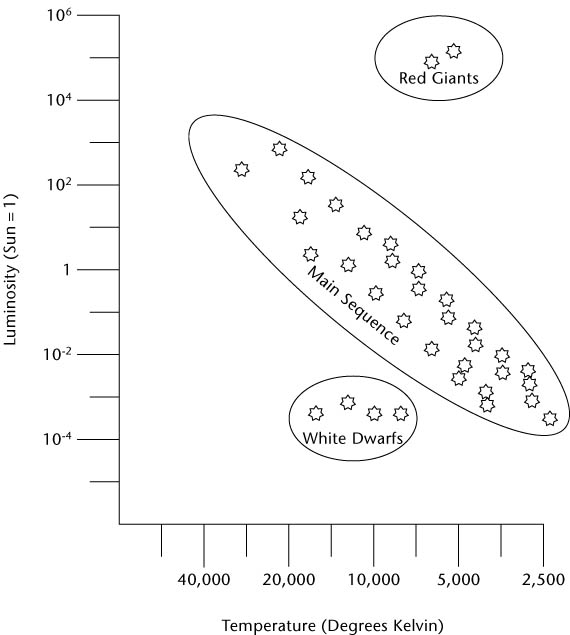
군집 분석을 하는 또 다른 이유는, 서로 특징이 다른 관측대상을 군집화하여 군집 별로 차별화된 대응을 하기 위함이다. 대표적인 예가 고객 세그멘테이션(customer segmentation)이라고 할 수 있다. 일반적으로 하나의 마케팅 전략이 어떤 그룹의 고객에게는 잘 작동하지만, 다른 그룹에는 잘 작동하지 않는다. 왜냐하면 고객은 하나로 뭉뚱그려질 수 있는 단일한 특성의 집단이 아나다. 그렇기 때문에 마케팅에서는 고객의 인구통계학적 특성, 거래 패턴 등을 고려하여 자연스럽게 뭉쳐지는 군집으로 나누어 군집의 특성에 맞추어 차별화된 마케팅 전략을 개발하려고 노력한다.
다음은 Linoff and Berry (2011) 책에 나오는 군집 분석이 차별화된 대응을 위해 사용된 예이다. 1990년대 미국 육군에서 여군의 군복과 관련된 디자인 문제에 직면했다. 다양한 치수의 군복 재고를 줄이면서, 각 군인에게 잘 맞는 군복 제공 방법을 찾고자 하였다. 사람의 신체 크기는 팔, 어깨, 가슴, 목 길이 등이 동일한 비율로 증가하고 감소하기 보다는 사람마다 다른 비율을 가진다. 따라서 일률적인 비율로 크기가 다른 군복을 만들기 보다는 여군의 다양한 체형에 맞는 군복 치수를 개발하고자 하였다. 이를 위해 3천여 명의 여군에게서 100가지 수치를 측정하여 군집 분석을 수행하고, 각 대표 군집에 맞는 군복 치수를 개발하여 여군의 군복 만족도를 높였다.
군집 분석은 데이터의 특이치를 발견하기 위해서도 사용된다. 특이치가 있는 데이터를 군집화 하면, 다음 그림처럼 소수의 큰 중심 군집(주류)과 바깥에 작은 군집(특이치)이 나타난다. 그러므로 군집화를 하면 데이터에 있는 특이치를 발견할 수 있다.
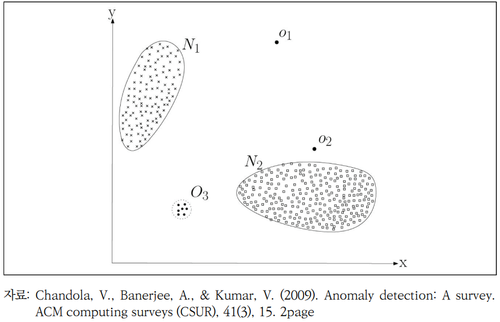
특이치를 찾기 위한 군집화는 다음과 같은 활용 영역이 있다.
- 신용카드 거래 중 사기성 거래의 발견
- 제조 라인 초기 제품의 제조 불량의 인식
- 독거 노인의 활동에서 이상 징후 발견
15.1.2 군집 분석의 유형
군집 분석은 확률 모형을 기반으로 하는 기법과 거리/유사성을 기반으로 하는 기법으로 나눠볼 수 있다.
- 확률 모형 기반 군집화 기법
- 군집에 대한 확률 모형을 가정하고, 데이터의 사례들이 이 확률 모형에 따라 발생한다고 가정한다.
- 대표적인 기법으로 가우시안 혼합 모형(Gaussian Mixture Models)이 있다.
- 데이터를 가장 잘 설명하는 군집 모형의 모수를 추정한다.
- 군집 모형의 모수를 추정하는 방법으로는 기대값 최대화 알고리즘(EM algorithm) 등이 사용된다.
- 거리/유사성 기반 군집화 기법:
- 데이터가 발생하는 확률 모형을 가정하지 않는다.
- 데이터의 사례들 사이의 거리/유사성을 계산하는 방법을 정의한다.
- 거리가 가까운, 유사한 사례를 서로 군집화 한다.
- 주요 기법으로 K-평균 군집 방법, 계층적 군집 방법 등이 있다.
이 장에서는 거리/유사성 기반 군집화 기법만을 다루도록 한다.
15.2 k-평균 군집화
k-평균 군집화(k-means clustering)는 가장 흔히 사용되는 군집 분석 알고리즘이다. 데이터 사례의 유사성에 기초하여 고정된 수(k)의 군집을 발견해 낸다. 군집의 중심점을 평균을 사용하여 계산하기 때문에 k-평균이라는 이름이 붙여졌다. 평균 대신 중위수로 군집의 중심을 계산하는 k-중위수(k-median) 기법 등도 있다.
15.2.1 알고리즘
k-평균 군집화 기법은 알고리즘이 매우 단순하다.
- 1단계: 변수 공간에서 임의의 k 개의 점을 시드(seeds)로 선택한다.
- 시드는 임의의 점일 수도 있고 사례 중에 하나가 선택될 수도 있다.
- 무작위적으로 선택할 수도 있고 변수 공간에서 최대한 흩어지도록 시드를 선택할 수도 있다.
- 2단계: 데이터의 각 사례를 가장 가까운 시드에 배정한다.
- 이 단계를 위해서는 거리 측정 방법이 정의되어야 한다.
- 동일한 시드에 배정된 사례들이 하나의 군집을 이룬다.
- 3단계: 군집의 중심점을 계산하여 군집의 시드로 선택한다.
- 중심점은 군집에 포함된 사례의 평균으로 구한다.
- 2단계로 돌아가 더 이상 군집의 변화가 없을 때까지 2, 3 단계를 반복한다.
k-군집화 기법이 작동하는 방식을 이해하기 위하여 다음 데이터를 고려해 보자.
| X | Y | label |
|---|---|---|
| 5.53 | 3.86 | 1 |
| 6.59 | 3.57 | 2 |
| 5.47 | 5.01 | 3 |
| 3.85 | 4.39 | 4 |
| 6.31 | 4.51 | 5 |
| 5.46 | 3.96 | 6 |
| 7.36 | 3.31 | 7 |
| 7.43 | 6.07 | 8 |
| 5.99 | 7.60 | 9 |
| 8.44 | 8.22 | 10 |
| 6.37 | 6.06 | 11 |
| 7.46 | 6.42 | 12 |
| 8.09 | 8.99 | 13 |
| 6.04 | 8.12 | 14 |
| 10.14 | 5.93 | 15 |
| 8.16 | 5.01 | 16 |
| 7.42 | 5.59 | 17 |
| 9.50 | 5.24 | 18 |
| 9.20 | 3.05 | 19 |
| 8.81 | 3.62 | 20 |
| 10.13 | 5.55 | 21 |
다음은 위의 데이터를 산점도로 표현한 것이다.
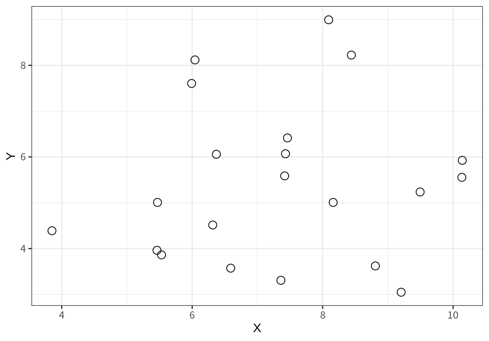
위와 같은 데이터를 \(k=3\)으로 군집화를 한다고 하자.
알고리즘의 시작은 변수 공간에서 임의의 3 개의 시드를 선택하는 것에서 시작한다.
다음 그래프에서 X로 표시된 지점이 시드로 선택되었다고 하자.
이 예에서는 데이터의 한 점을 초기 시드로 선택하였다.
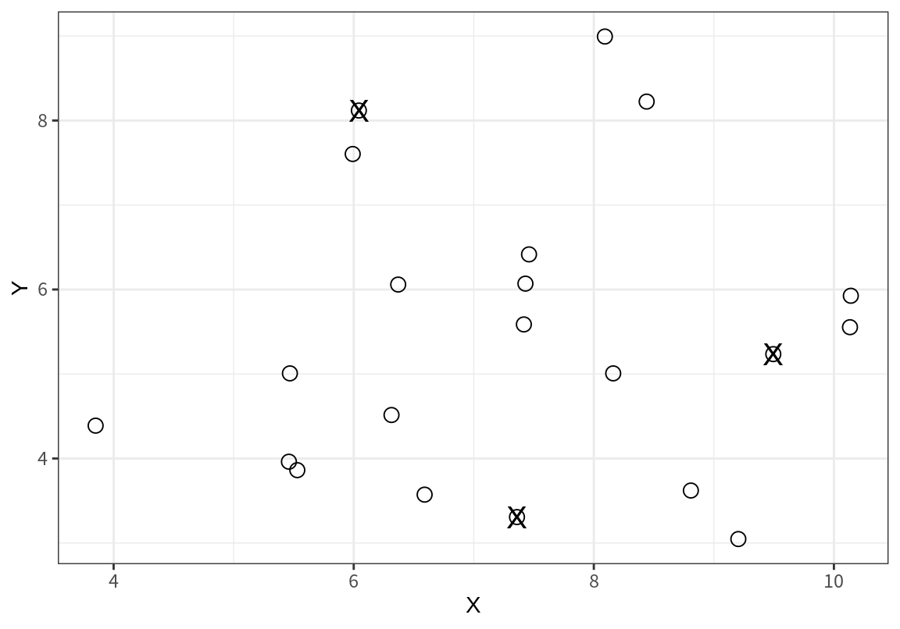
시드가 결정되면 시드와 21 개의 데이터 사이의 거리를 계산한다.
| seed1 | seed2 | seed3 | |
|---|---|---|---|
| 1 | 1.91 | 4.29 | 4.20 |
| 2 | 0.81 | 4.58 | 3.35 |
| 3 | 2.54 | 3.16 | 4.03 |
| 4 | 3.67 | 4.33 | 5.71 |
| 5 | 1.60 | 3.61 | 3.26 |
| 6 | 2.01 | 4.20 | 4.23 |
| 7 | 0.00 | 4.99 | 2.88 |
| 8 | 2.76 | 2.47 | 2.23 |
| 9 | 4.51 | 0.52 | 4.23 |
| 10 | 5.03 | 2.40 | 3.17 |
| 11 | 2.92 | 2.09 | 3.23 |
| 12 | 3.11 | 2.22 | 2.35 |
| 13 | 5.73 | 2.23 | 4.01 |
| 14 | 4.99 | 0.00 | 4.50 |
| 15 | 3.82 | 4.65 | 0.95 |
| 16 | 1.88 | 3.76 | 1.35 |
| 17 | 2.28 | 2.88 | 2.11 |
| 18 | 2.88 | 4.50 | 0.00 |
| 19 | 1.86 | 5.98 | 2.21 |
| 20 | 1.48 | 5.28 | 1.75 |
| 21 | 3.57 | 4.83 | 0.71 |
그리고는 가장 가까운 시드로 사례들이 군집화 된다.
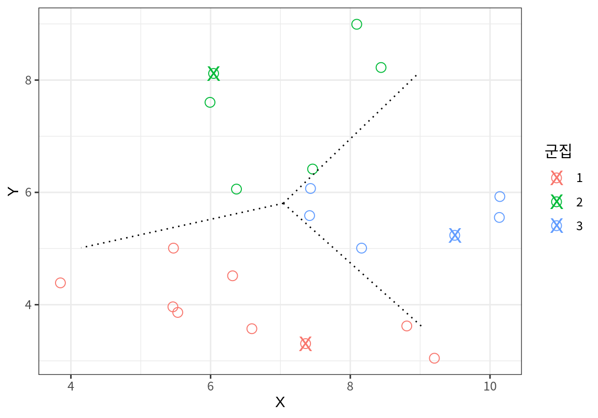
그런데 군집 1의 맨 오른편의 두 점은 군집 1의 다른 사례들다는 군집 3의 사례들과 더 가깝다. 우연히 군집 1의 시드가 오른편으로 치우쳐져 있기 때문에 군집 1에 배속되었을 뿐이다.
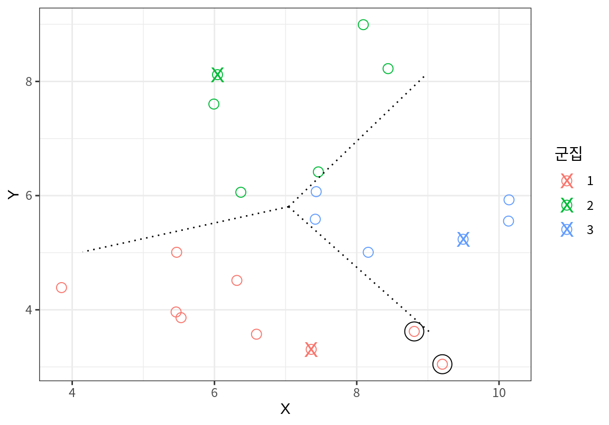
k-평균에서는 군집의 평균점을 사용하여 군집의 시드를 갱신한다.
그리고는 갱신된 시드를 이용하여 사례들과의 거리를 다시 계산하여 사례를 다시 군집화 한다.
다음 그래프에서 X로 표현된 점은 이전의 군집 결과로 계산한 군집의 평균점이고, 사례들은 이 평균점을 시드로 하여 다시 군집화된 것이다.
앞서 군집 1로 배정되었던 맨 오른편의 두점이 새로운 군집에서는 군집 3으로 이동한 것을 볼 수 있다.
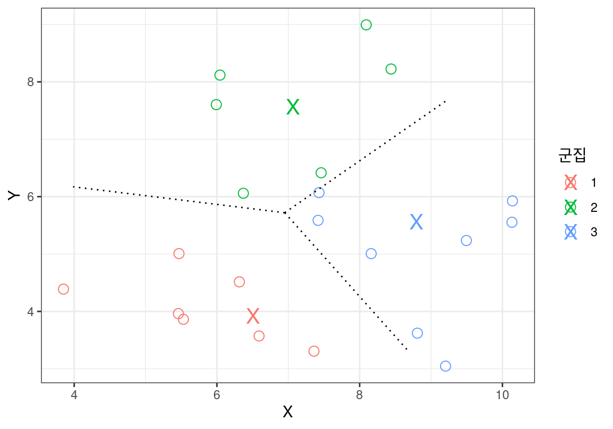
다시 현재의 군집으로 군집의 평균점을 구하고, 이 평균점을 시드로 하여 다시 군집화를 한 결과이다. 오른쪽 하단의 두 점이 군집 3에 배정되었으므로 군집 3의 평균점이 아래로 이동하여 군집 2와 3의 경계에 있던 점이 군집 2에서 3으로 이동한 것을 볼 수 있다.

한번 더 현재의 군집의 평균점으로 시드를 갱신한 후 군집화를 하면 더 이상 군집이 바뀌는 점이 없다. 그러므로 군집의 평균점도 더 이상 바뀌지 않고 군집화 결과도 더 이상 변화하지 않는다. 이 지점에서 k-평균 군집화 결과는 종료된다.
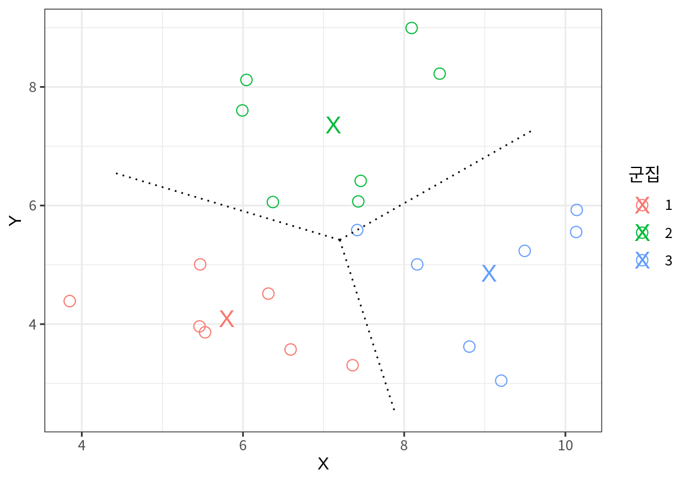
이 문제에서는 데이터가 매우 적어서 위치가 겹치는 데이터들이 많지 않기 때문에 3 번의 반복만으로 군집 결과가 수렴되었다. 그러나 대규모의 데이터에서는 군집화의 결과가 수렴되기까지는 매우 긴 시간이 걸린다. 따라서 현실에서는 군집화 결과가 수렴될 때가지 반복을 수렴하기 보다는 일정 횟수까지만 군집화를 반복한 후 알고리즘을 종료한다.
15.2.2 k-평균 군집화의 장점 및 단점
k-평균 군집화는 다음과 같은 장점이 있다.
- 다른 군집화 방법에 비해 이해하기 쉽고 계산 시간이 비교적 짧다.
- 병렬처리가 용이하여 대규모 데이터의 군집화에 적합하다.
그러나 다음과 같은 단점이 있다.
- 군집의 수 k에 따라 매우 상이한 군집 결과가 발생한다. 그러므로 군집의 수를 적절히 결정하는 방법이 필요하다.
- 초기 시드의 결정에 따라 비효율적인 군집이 발생할 가능성이 있다.
- 이러한 문제를 해결하기 위하여 k-평균 군집화에서는 초기 시드를 여러 번 바꾸어 가면 군집화를 수행한 후 가장 좋은 결과를 선택한다.
- 데이터의 분포가 군집의 중심점 주위로 균일하지 않으면 비효율적이고 해석이 어려운 군집이 발생할 수 있다.
- k-평균 군집화는 거리를 사용하여 군집화를 수행하므로 데이터가 군집 중심에서 원형으로 분포되었을 때 군집화가 잘 수행된다.
- 만약 데이터가 군집 중심에서 비스듬한 길쭉한 타원형으로 분포되어 있으면 데이터가 군집을 중심으로 분포하지 않을 수도 있다. 이러한 경우에는 가우시안 혼합 분포를 이용하는 확률 모형 기반의 군집화를 수행하는 것이 좋다.
15.2.3 R을 이용한 k-평균 군집 분석
14.1 절에서 소개한 한국프로야구(KBO) 2024 정규 시즌의 타자 기록을 사용하여 k-평균 군집화를 수행해 보자.
Rows: 100 Columns: 38
── Column specification ────────────────────────────────────────────────────────
Delimiter: ","
chr (3): 선수명, 팀명, 포지션
dbl (35): 경기, 타석, 타수, 안타, 단타, 2루타, 3루타, 홈런, 득점, 타점, 볼넷, 고4, HBP, 삼진, 희플, 희타,...
ℹ Use `spec()` to retrieve the full column specification for this data.
ℹ Specify the column types or set `show_col_types = FALSE` to quiet this message.변수 정규화
14.1 절에서 살펴본 바와 같이 타자들의 기록은 스케일이 서로 다르다. 다음은 타자들의 기본통계 열들의 표준편차를 보여준다.
select(batters, 경기:도실) %>%
summarise(across(everything(), sd)) %>%
pivot_longer(everything(), names_to="variable", values_to="sd") %>%
mutate(variable = reorder(variable, sd)) %>%
ggplot() +
geom_col(aes(x=variable, y=sd)) +
coord_flip()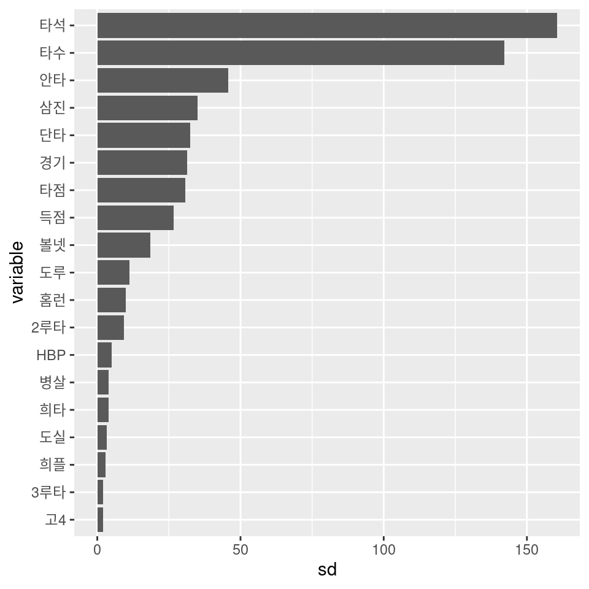
스케일이 다른 변수로된 사례들의 거리를 계산하며, 스케일이 큰 변수가 다른 변수들을 압도하여 특정 변수의 차이만 거리에 과대하게 반영된다. 그러므로 사례들 사이의 거리를 계산하기 전에 변수의 스케일을 통일해 준다. 변수의 스케일을 통일하는 방법으로는 모든 변수의 범위를 [0, 1] 사이로 만드는 표준화나, 모든 변수의 표준편차를 1로 만드는 정규화가 자주 사용된다. 우리는 정규화를 사용하여 변수들의 스케일을 통일할 것이다. 정규화릏 하는 방법은 변수 \(X_j\)를 변수의 평균 \(\bar{X}_j\)로 빼준 후, 변수의 표준편차 \(sd(X_j)\)로 나누는 것이다. \[ \frac{X_j - \bar{X}_j}{sd(X_j)} \]
R에서 정규화를 하는 방법은 scale() 함수를 사용하는 것이다.
다음은 batters 데이터의 수치변수들을 scale() 함수로 정규화하는 예를 보여준다.
scale() 함수가 적용되면 행렬이라는 형식의 데이터로 반환한다.
다음은 행렬의 모든 열에서 표준편차를 구하는 방법을 보여준다.
모든 변수의 표준편차가 1이 되었다.
경기 타석 타수 안타 단타 2루타 3루타 홈런 득점 타점 볼넷 고4 HBP
1 1 1 1 1 1 1 1 1 1 1 1 1
삼진 희플 희타 병살 도루 도실
1 1 1 1 1 1 거리 계산 함수
수치형 변수로 이루어진 데이터에서 사례들 사이의 거리를 계산하는 방법은 여러 가지가 있다. 가장 대표적인 방법이 유클리드 거리와 맨해튼 거리이다. 유클리드 거리는 직교좌표계의 두 점 사이의 거리를 계산하는 방식으로 \(i\)-번째 점 \((x_{i1}, x_{i2}, \dots, x_{im})\)와 \(j\)-번째 점 \((x_{j1}, x_{j2}, \dots, x_{jm})\) 사이의 거리 \(d_{ij}\)는 다음처럼 계산된다. \[ d_{ij} = \sqrt{(x_{i1} - x_{j1})^2 + (x_{i2} - x_{j2})^2 + \dots + (x_{im} - x_{jm})^2} \] 반면 맨해튼 거리는 다음과 같이 계산된다. \[ d_{ij} = |x_{i1} - x_{j1}| + |x_{i2} - x_{j2}| + \dots + |x_{im} - x_{jm}| \] 두 거리 계산 방식의 차이는 다음과 같이 시각화할 수 있다.
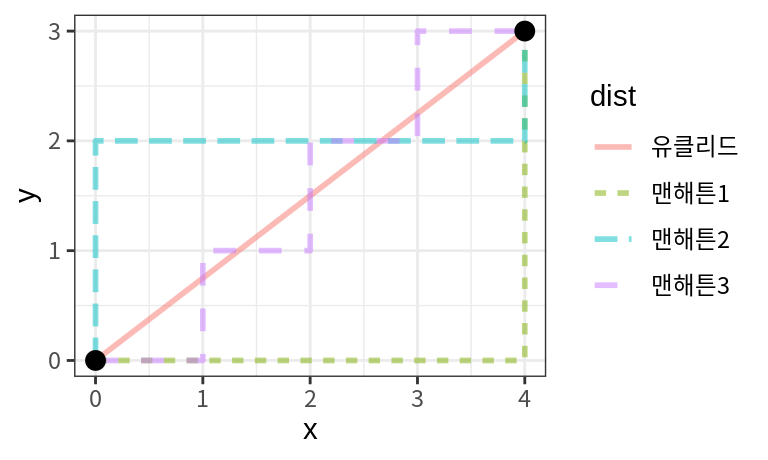
유클리드 거리는 두 점 사이의 물리적인 최단 경로의 거리가 되고, 맨해튼 거리는 격자 모양의 길을 따라 두 점 사이를 이동할 때 지나가야 할 거리가 된다. 비유적으로 맨해튼 거리는 맨해튼의 빌딩숲에서 두 지점 사이를 이동하기 위해서 걸어가야할 거리라 할 수 있다. 어떤 경로를 택하든 일부러 돌아가지 않는 한 모든 경로의 거리가 7로 동일하다.
유클리드 거리와 맨해튼 거리의 특성은 다음과 같다.
- 유클리드 거리는 변수의 차이의 제곱의 합으로 거리를 계산하므로 나머지 변수가 매우 가깝더라도 한두 변수의 차이가 크면 거리가 커진다.
- 반면 맨해튼 거리는 변수의 차이의 합으로 거리를 계산하므로 한두 변수에서 차이가 나더라도 대다수의 변수에서 차이가 적으면 거리가 그리 멀지 않다.
그러므로 유클리드 거리는 변수들의 거리가 균등한 경우에 더 가깝게 계산되는 반면, 맨해튼 거리는 변수의 거리 차이의 합만 동일하면 변수들 사이의 거리가 불균등하더라도 동일한 거리가 된다.
유클리드와 맨해튼 거리 이외에도 다음 거리 함수가 수치형 데이터의 거리 계산에 사용된다.
최대좌표거리: 두 점 \(i\)와 \(j\)에서 가장 차이가 큰 변수의 차이가 두 점의 거리가 된다. \[ d_{ij} = \max_{1 \le k \le m} | x_{ik} - x_{jk} | \]
민코프스키 거리: 유클리드, 맨해튼, 최대좌표거리 등을 일반화한 것으로 두 점 사이의 p-norm이라는 다음 식으로 거리를 계산한다. \[ d_{ij} = \sqrt[p]{(x_{i1} - x_{j1})^p + (x_{i2} - x_{j2})^p + \dots + (x_{im} - x_{jm})^p} \] \(p=1\)이면 맨해튼 거리가 되고, \(p=2\)이면 유클리드 거리, \(p=\infty\)이면 최대좌표거리가 된다. 따라서 \(p\)가 커질수록 거리에서 가장 차이가 큰 변수의 영향력이 커지고, \(p\)가 1에 가까워질수록 영향력이 균등해 진다.
마할로노비스 거리: 변수 사이의 상관성을 고려하여 나머지 변수와 상관성이 적은 변수의 차이는 크게, 나머지 변수와 상관성이 높아서 중복된 정보인 변수의 차이는 작게 반영하여 거리를 계산한다. \(\mathbf{S}\)를 변수들의 공분산 행렬이라고 하고 \(\mathbf{x}_i\)와 \(\mathbf{x}_j\)를 변수 공간의 두 점이라고 한다면 두 점의 거리는 다음처럼 계산된다. \[ d_{ij} = \sqrt{(\mathbf{x}_i - \mathbf{x}_j)^\top \mathbf{S}^{-1}(\mathbf{x}_i - \mathbf{x}_j)} \]
상관계수로 유사도 측정: 관측치의 절대적인 크기는 무시하고 두 관측치가 평균을 중심으로 유사한 방향에 있는지를 Pearson 상관계수로 측정한다. 1에 가까워질수록 두 관측치의 유사도는 커지고, -1일 수록 두 관측치의 유사도는 작아진다. \(i\)-번째 점 \((x_{i1}, x_{i2}, \dots, x_{im})\)와 \(j\)-번째 점 \((x_{j1}, x_{j2}, \dots, x_{jm})\) 사이의 유사도 \(r_{ij}\)는 다음과 같이 계산된다. \[ r_{ij} = \frac{\sum_{k=1}^{m}(x_{ik} - \bar{x}_k)(x_{jk} - \bar{x}_k)} {\sqrt{\sum_{k=1}^{m}(x_{ik} - \bar{x}_k)^2 \sum_{k=1}^{m}(x_{jk} - \bar{x}_k)^2}} \] 단, \(\bar{x}_{k}\)는 \(k\)-번째 변수의 평균이다. 유사도가 커지면 가까운 점이므로 거리로 나타낼 때에는 \(d_{ij} = 1 - r_{ij}\)로 정의한다.
코사인 유사도: 관측치를 벡터로 표현하여 두 벡터 사이각의 코사인 값으로 유사도 \(r_{ij}\)를 계산한다. 두 벡터가 원점에서 동일한 방향이면 유사도가 커져 1에 가까워지고 반대 방향이면 유사성이 낮아져 -1에 가까워진다. \[ r_{ij} = \frac{\sum_{k=1}^{m}x_{ik} x_{jk} } {\sqrt{\sum_{k=1}^{m} x_{ik}^2 \sum_{k=1}^{m} x_{jk}^2}} \]
범주형 변수로만 이루어진 데이터는 매칭 계수나 자카드 계수 등이 주로 사용된다. 그리고 범주형 변수와 수치형 변수가 섞여 있는 데이터는 범주형 변수의 범주가 같으면 거리 0, 다르면 1로 하여 수치형 변수와 동일한 방식으로 유클리드나 맨해튼 거리를 계산하거나, Gower 유사도 등을 사용한다. 범주형 변수가 포함된 데이터에서 거리 계산은 여기서는 다루지 않는다.
dist() 함수
R에서 거리를 계산할 때는 dist() 함수를 사용한다.
- 첫 번째 인수로 거리를 계산할 데이터를 행렬 또는 데이터프레임 형식으로 전달한다.
method인수는 거리를 계산하는 방법을 지정한다."euclidean": 유클리드 거리. 디폴트 값이다."manhattan": 맨해튼 거리"maximum": 최대 좌표 거리"minkowski": 민코프스키 거리- 이 외에도
"canberra"거리와"binary"거리가 있다."binary"는 자카드 거리를 계산한다.
p: 민코프스키 거리를 계산할 때 사용할 승수를 지정한다.
다음은 정규화된 타자 데이터에서 처음 6 타자 사이의 유클리드 거리를 계산하는 예이다.
1 2 3 4 5
2 6.414634
3 6.209822 4.353452
4 5.638388 5.424104 3.730241
5 7.197932 6.098121 3.593338 5.036222
6 7.224850 5.722043 3.374603 4.158341 4.324725\(i\)-번째 사례에서 \(j\)-번째 사례까지의 거리나, \(j\)-번째 사례에서 \(i\)-번째 사례까지의 거리는 동일하므로 두 쌍의 사례들 사이의 거리 행렬에서 아래 삼각형 영역만 출력을 한다.
거리 계산 결과를 행렬 형태로 얻고자 하면 as_matrix() 함수로 행렬 형식으로 변환한다.
대각선은 자기 자신과의 거리이므로 0, 대각선을 사이에 두고 마주보는 요소는 모두 동일한 값이다.
1 2 3 4 5 6
1 0.000000 6.414634 6.209822 5.638388 7.197932 7.224850
2 6.414634 0.000000 4.353452 5.424104 6.098121 5.722043
3 6.209822 4.353452 0.000000 3.730241 3.593338 3.374603
4 5.638388 5.424104 3.730241 0.000000 5.036222 4.158341
5 7.197932 6.098121 3.593338 5.036222 0.000000 4.324725
6 7.224850 5.722043 3.374603 4.158341 4.324725 0.000000다음은 동일한 데이터에 대해 맨해튼 거리를 계산한 결과이다.
1 2 3 4 5
2 17.28656
3 18.21640 14.88897
4 17.04361 18.26457 12.92524
5 21.17416 18.67688 12.17618 15.69214
6 21.83729 18.29603 11.29198 13.20593 15.60397사례들 사이의 거리 계산 결과를 이용하여 군집은 가까운 사례들 사이의 군집화를 수행한다.
병합 군집화에서는 dist() 함수로 모든 사례에 대하여 거리 계산을 한 후, 그 결과를 입력받아서 군집화를 수행한다.
반면 k-평균 군집화에서는 시드의 위치가 계속 변하기 때문에 알고리즘 자체에서 거리 계산을 수행한다.
kmeans()를 이용한 군집화
R의 기본 stat 패키지의 kmeans()는 k-평균 군집화를 수행한다.
- 첫 번째 인수로 데이터가 수치 행렬 또는 수치로만 이루어진 데이터프레임 형식으로 지정된다.
centers인수에 군집의 수 \(k\)를 설정하거나, 초기 시드로 사용할 \(k\) 개의 관측점을 지정한다. 군집의 수가 지정되면 데이터에서 \(k\) 개의 행이 시드로 무작위 추출된다.iter.max인수는 최대 반복 횟수를 지정한다. 기본값은 10이다.nstart인수는 초기 시드를 달리하여 k-평균 군집화를 몇 번 시도할지를 지정한다. 기본값은 1로 한 번만 수행된다.algorithm인수로 조금씩 구현 방법이 다른 알고리즘을 선택할 수 있다. 우리는 기본값으로 설정된 Hartigan and Wong이 개발한 알고리즘을 사용할 것이다.
다음 예는 정규화된 타자 데이터를 \(k=3\) 개의 군집을 생성한다.
K-means clustering with 3 clusters of sizes 38, 32, 30
Cluster means:
경기 타석 타수 안타 단타 2루타 3루타
1 0.2156607 0.1818939 0.1817526 0.1044683 0.1177994 0.1082262 -0.1940637
2 0.8407483 0.9873874 0.9850705 1.0250550 0.9495607 0.8631870 0.6675124
3 -1.1699685 -1.2836122 -1.2809619 -1.2257185 -1.1620774 -1.0578194 -0.4661991
홈런 득점 타점 볼넷 고4 HBP 삼진
1 0.0322832 -0.03534549 0.1500764 0.0994473 -0.1978942 0.3047498 0.1739876
2 0.6649128 1.12095542 0.8201901 0.8210738 0.7829001 0.2173607 0.6472846
3 -0.7501324 -1.15091484 -1.0649662 -1.0017787 -0.5844275 -0.6178679 -0.9108211
희플 희타 병살 도루 도실
1 0.05035605 -0.01124327 0.3708959 -0.3162716 -0.2251868
2 0.69634113 0.54499385 0.3487327 0.7821202 0.7323434
3 -0.80654820 -0.56708530 -0.8417830 -0.4336508 -0.4959297
Clustering vector:
[1] 2 2 2 2 2 2 2 2 2 2 2 2 1 2 1 2 1 2 2 1 1 2 1 1 1 1 1 1 2 2 2 1 1 2 1 2 3
[38] 2 2 2 1 2 2 2 1 1 2 1 1 1 1 1 1 3 1 1 3 1 1 1 3 1 1 1 1 2 1 3 1 3 3 3 3 3
[75] 1 1 3 3 3 3 1 1 3 3 2 3 2 3 3 3 3 3 3 3 3 3 3 3 3 3
Within cluster sum of squares by cluster:
[1] 302.2123 498.8580 175.0282
(between_SS / total_SS = 48.1 %)
Available components:
[1] "cluster" "centers" "totss" "withinss" "tot.withinss"
[6] "betweenss" "size" "iter" "ifault" 결과를 출력해 보면 매우 복잡하다.
- 첫 줄에는 군집의 수와 각 군집에 배정된 사례의 수를 출력한다.
- Cluster.means 영역은 군집의 평균점에 대한 정보를 제공한다.
- 이 데이터는 19 개의 변수가 있으므로 군집 별로 변수의 평균을 보여준다. 정규화된 데이터의 경우 평균이 0보다 크다는 것은 전체 집단보다 군집의 해당 변수의 값이 평균적으로 크다는 것을 의미하고 0보다 작다는 것은 전체 집답보다 평균적으로 작다는 것을 의미한다.
- Clustering vector 영역은 사례들이 어떤 군집에 배정되었는지 보여준다.
- Within cluster sum of squares by cluster 영역은 군집 내 거리를 의미하며, 군집의 평균점과 사례의 거리의 제곱의 합(within_SS)이다.
- total_SS는 전체 평균점과 사례의 거리의 제곱의 합을 의미한다. between_SS는 군집 사이의 거리를 의미하며, 다음과 같다. \[ \text{between_SS} = \text{total_SS} - \text{within_SS} \] 그러므로 between_SS / total_SS는 회귀분석의 \(R^2\)와 마찬가지의 의미이며 데이터의 전체 변동성을 군집이 설명한 비율을 의미한다. 이 비율이 높을수록 군집화가 데이터의 변동을 많이 설명한 것이라 할 수 있다.
- Available components 영역은
kmeans()함수의 결과가 가지고 있는 요소들이다. 이미 출력된 정보뿐 아니라 다른 정보를 가진 요소들도 있다.
군집화 결과의 요소들을 하나씩 탐색해 보자.
[1] 2 2 2 2 2 2 2 2 2 2 2 2 1 2 1 2 1 2 2 1 1 2 1 1 1 1 1 1 2 2 2 1 1 2 1 2 3
[38] 2 2 2 1 2 2 2 1 1 2 1 1 1 1 1 1 3 1 1 3 1 1 1 3 1 1 1 1 2 1 3 1 3 3 3 3 3
[75] 1 1 3 3 3 3 1 1 3 3 2 3 2 3 3 3 3 3 3 3 3 3 3 3 3 3 경기 타석 타수 안타 단타 2루타 3루타
1 0.2156607 0.1818939 0.1817526 0.1044683 0.1177994 0.1082262 -0.1940637
2 0.8407483 0.9873874 0.9850705 1.0250550 0.9495607 0.8631870 0.6675124
3 -1.1699685 -1.2836122 -1.2809619 -1.2257185 -1.1620774 -1.0578194 -0.4661991
홈런 득점 타점 볼넷 고4 HBP 삼진
1 0.0322832 -0.03534549 0.1500764 0.0994473 -0.1978942 0.3047498 0.1739876
2 0.6649128 1.12095542 0.8201901 0.8210738 0.7829001 0.2173607 0.6472846
3 -0.7501324 -1.15091484 -1.0649662 -1.0017787 -0.5844275 -0.6178679 -0.9108211
희플 희타 병살 도루 도실
1 0.05035605 -0.01124327 0.3708959 -0.3162716 -0.2251868
2 0.69634113 0.54499385 0.3487327 0.7821202 0.7323434
3 -0.80654820 -0.56708530 -0.8417830 -0.4336508 -0.4959297[1] 38 32 30[1] 1881[1] 302.2123 498.8580 175.0282[1] 976.0985[1] 904.9015군집 내의 거리(within_SS)와 군집 사이의 거리(between_SS)의 합이 전체 평균에서의 거리(total_SS)와 같음을 확인할 수 있다.
[1] 1881그리고 군집화 결과의 출력에서 볼 수 있었던 between_SS / total_SS 의 값도 계산할 수 있다.
[1] 0.4810747[1] 3이 사례에서는 3 반복 만에 알고리즘이 수렴한 것을 볼 수 있다.
초기 시드를 달리하며 반복하기
초기 시드를 바꾸어서 여러 번 시도하면 더 좋은 결과를 얻을 수 있는지 확인해 보자.
K-means clustering with 3 clusters of sizes 35, 23, 42
Cluster means:
경기 타석 타수 안타 단타 2루타 3루타
1 -1.0314224 -1.1579459 -1.1507181 -1.0961791 -1.0238085 -0.9430983 -0.3959665
2 0.8440932 0.9867864 0.9821553 1.1192296 1.1481218 0.8825950 1.1000825
3 0.3972771 0.4245718 0.4210848 0.3005711 0.2244404 0.3025894 -0.2724540
홈런 득점 타점 볼넷 고4 HBP 삼진
1 -0.7277376 -1.0437835 -0.9774737 -0.9249198 -0.5696506 -0.60061700 -0.8479468
2 0.3489558 1.2089001 0.7152624 0.8176381 0.6388451 0.07516619 0.3297674
3 0.4153531 0.2078028 0.4228702 0.3230123 0.1248650 0.45935173 0.5260354
희플 희타 병살 도루 도실
1 -0.7190593 -0.529091688 -0.7728623 -0.3944579 -0.3463147
2 0.7674617 0.815658373 0.2178596 1.1974457 1.1433303
3 0.1789395 -0.005760322 0.5247478 -0.3270292 -0.3375138
Clustering vector:
[1] 2 2 2 2 3 2 2 3 2 2 2 2 3 2 3 2 3 3 2 3 3 2 3 3 3 3 3 3 2 3 3 3 3 2 3 2 1
[38] 2 3 2 3 3 2 2 3 3 2 3 1 3 3 1 3 1 3 3 1 3 1 3 1 3 3 3 3 3 3 1 1 1 1 1 1 1
[75] 3 3 1 1 1 1 3 1 1 1 3 1 2 1 1 1 1 1 1 1 1 1 1 1 1 1
Within cluster sum of squares by cluster:
[1] 230.6569 345.0618 398.5590
(between_SS / total_SS = 48.2 %)
Available components:
[1] "cluster" "centers" "totss" "withinss" "tot.withinss"
[6] "betweenss" "size" "iter" "ifault" between_SS / total_SS가 증가하여 군집이 데이터의 변동의 더 많은 부분을 설명하는 것을 확인할 수 있다.
군집의 수의 조정
앞의 예에서는 \(k=3\)으로 군집화를 하였지만, 3 개의 군집이 타자들의 설명하는 최적의 군집인지는 사전에 알 수 없다. 그러므로 \(k\)를 바꾸어 가면 군집화를 수행해 보아야 한다.
다음은 \(k=5\)일 때의 군집화 결과를 보여준다. 초기 시드를 5 번 바꾸어 군집화를 시도하였다.
K-means clustering with 5 clusters of sizes 12, 24, 18, 17, 29
Cluster means:
경기 타석 타수 안타 단타 2루타 3루타
1 0.7398361 0.7551283 0.6921748 0.6875715 1.0416848 0.1147718 1.0595434
2 -0.2353152 -0.5432903 -0.5380312 -0.5427138 -0.4400309 -0.5470315 -0.2754813
3 -1.6829442 -1.6016841 -1.5935404 -1.4892510 -1.4269824 -1.2769399 -0.4661991
4 0.9561185 1.1471550 1.1691256 1.2438566 0.8600893 1.3103549 0.4861435
5 0.3727074 0.4588313 0.4625946 0.3598355 0.3146444 0.4296683 -0.2060629
홈런 득점 타점 볼넷 고4 HBP
1 -0.5483405 0.9823698 -0.1830850 0.8373263 -0.04137540 0.5024788
2 -0.4858016 -0.5872294 -0.5415183 -0.5077042 -0.42926974 -0.2019308
3 -0.8902194 -1.3564576 -1.3138407 -1.2893163 -0.68786598 -0.6603560
4 1.5691508 1.2899511 1.5345306 0.8154366 1.38090388 0.3860638
5 0.2616452 0.1652461 0.4398473 0.3959399 -0.01016551 0.1427557
삼진 희플 희타 병살 도루 도실
1 -0.02819821 0.2160810 1.24741608 -0.3011121 2.04877873 1.90671117
2 -0.46760439 -0.3327878 -0.07163634 -0.1763419 -0.27066299 -0.13399343
3 -1.13246922 -1.0453543 -0.84733926 -1.1190501 -0.54476766 -0.66021286
4 1.16302474 0.9926538 0.21665010 0.7092819 0.08225309 0.05852587
5 0.41978997 0.2529379 -0.05795399 0.5493331 -0.33385923 -0.30261379
Clustering vector:
[1] 4 4 4 4 4 4 1 4 4 4 1 4 5 1 5 1 5 5 4 2 5 4 5 5 5 5 5 5 5 4 4 1 5 1 2 1 3
[38] 1 4 1 5 5 1 1 5 5 4 5 2 2 5 2 5 2 2 5 3 2 2 2 3 5 5 5 5 5 5 2 2 2 2 3 2 3
[75] 5 5 3 2 3 2 2 2 3 2 4 2 1 3 3 3 2 3 2 3 3 3 2 3 3 3
Within cluster sum of squares by cluster:
[1] 120.48508 149.10938 64.33988 197.59490 204.42453
(between_SS / total_SS = 60.9 %)
Available components:
[1] "cluster" "centers" "totss" "withinss" "tot.withinss"
[6] "betweenss" "size" "iter" "ifault" 군집화는 3 번만에 수렴을 하였다.
[1] 3between_SS / total_SS 값에서 군집의 수를 5로 하면 데이터의 변동의 더 많은 부분은 군집이 설명하는 것을 알 수 있다.
동일한 데이터에서 군집의 수 \(k\)를 증가시키면 between_SS / total_SS 값이 증가한다. 그러면 \(k\)를 계속 증가시켜야 할까? \(k\)를 데이터의 사례 수만큼 증가시키면 사례 하나가 군집 하나가 되므로 군집 내 거리는 0이 되고 between_SS / total_SS 값은 1이 된다. 그러나 이러한 군집화는 원래의 데이터와 동일하므로 우리에게 어떠한 새로운 정보도 주지 못한다. 반면 \(k=1\)로 모든 데이터를 하나의 군집으로 묶는 것도 원래의 데이터와 동일해져 새로운 정보를 주지 못한다. 우리가 원하는 것은 데이터를 하나로 뭉뚱그리거나 개별적인 사례로만 취급하는 것이 아니라 특징 공유하는 사례들을 적절한 그룹으로 나누어 봄으로써 데이터에 대한 새로운 정보와 직관을 얻는 것이다.
군집의 수 \(k\)를 늘리면 처음에는 데이터 안에 존재하는 안정적인 군집 패턴을 찾아낸다. 이러한 패턴은 데이터가 조금 변동되어도 안정적으로 유지된다. 그러나 \(k\)가 어느 수준을 넘어서면 데이터에서 우연히 모여진 패턴도 군집으로 오인하여 군집화를 수행한다. 이렇게 모형이 복잡해지면 데이터 안의 실제적인 패턴뿐 아니라 우연히 발생한 패턴마저 학습하는 현상을 과적합 또는 과대적합(overfitting)이라고 한다. 과적합된 패턴은 데이터가 조금 변동하여도 유지되지 않는다.
우리는 데이터에서 안정적으로 유지되는 군집 패턴만을 학습하고 우연적인 패턴은 학습하지 않기를 원한다. 그렇다면 군집 결과가 과적합되었는지 안 되었는지를 어떻게 판단해야 할까? 한 가지 방법은 데이터를 분할하거나 데이터에 약간의 변동을 주어 군집화를 여러 번 하여 군집결과가 유사한지 살펴보는 것이다.
좀 더 간단한 방법은 팔꿈치 차트(elbow chart)를 사용하는 것이다. 팔꿈치 차트는 \(k\)가 변화함에 따라 군집 내 거리(within_SS)의 합의 변화를 그래프로 그린 것이다. 다음은 \(k=2\)부터 \(k=20\)까지 군집화를 했을 때의 군집 내 거리(within_SS)의 변화를 시각화한 것이다.
k_range <- 2:20
within_ss <- sapply(k_range, function(k) {
result <- kmeans(batters_scaled, k, nstart=5)
result$tot.withinss
})
ggplot() + geom_line(aes(k_range, within_ss))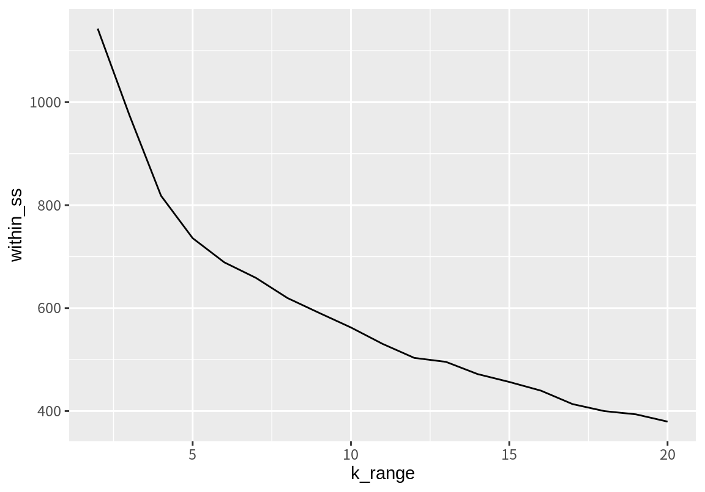
군집의 수가 증가함에 따라 군집 내 거리가 지속적으로 감소하는 것을 관찰할 수 있다. 아울러 감소의 정도가 처음에는 크다가 감소하여 완만해져서 그래프에서 팔의 팔꿈치처럼 꺾이는 지점이 있는 것도 볼 수 있다. 팔꿈치 방법은 이 지점 근처의 군집의 수로 최적 \(k\)를 결정하는 것이다. 이 예에서는 \(k=5\) 근처가 최적 군집 수이다. 최적 군집의 수로 군집화를 수행한다.
군집의 해석
군집 결과를 얻었으면 군집의 의미를 해석해 보아야 한다. 이러한 해석을 통하여 데이터와 군집에 대한 직관적 이해를 높일 수 있다.
군집을 해석할 때는 프로파일 기법과 의사결정나무가 자주 사용된다. 프로파일 기법은 군집의 평균점을 잉요하여 군집의 특징을 프로파일링하는 것이고, 의사결정나무를 이용하는 방법은 군집의 결과를 의사결정나무로 예측하여 의사결정나무의 분할 방식을 이용하여 군집이 어떤 방식으로 대비되는지를 확인하는 것이다. 여기서는 프로파일 기법만 사용하도록 한다.
정규화된 데이터를 사용하였으면 전체 데이터의 평균은 원점이 된다. 따라서 군집의 평균이 양수이면 전체 집단에 비해 해당 변수의 값이 큰 경향이 군집에 있는 것이고, 음수이면 전체에 비해 해당 변수의 값이 작은 경향이 있다는 것이다.
군집의 평균을 시각화해 보자.
행렬로 되어 있는 군집의 평균을 데이터프레임으로 변환한 후, 행 이름을 군집이라는 열로 변환하였다.
# A tibble: 5 × 20
군집 경기 타석 타수 안타 단타 `2루타` `3루타` 홈런 득점 타점
<chr> <dbl> <dbl> <dbl> <dbl> <dbl> <dbl> <dbl> <dbl> <dbl> <dbl>
1 1 -1.63 -1.57 -1.56 -1.46 -1.39 -1.27 -0.355 -0.900 -1.32 -1.30
2 2 -0.186 -0.501 -0.499 -0.522 -0.428 -0.534 -0.381 -0.419 -0.572 -0.496
3 3 0.956 1.15 1.17 1.24 0.860 1.31 0.486 1.57 1.29 1.53
4 4 0.740 0.755 0.692 0.688 1.04 0.115 1.06 -0.548 0.982 -0.183
5 5 0.368 0.477 0.483 0.386 0.341 0.474 -0.182 0.252 0.182 0.455
# ℹ 9 more variables: 볼넷 <dbl>, 고4 <dbl>, HBP <dbl>, 삼진 <dbl>, 희플 <dbl>,
# 희타 <dbl>, 병살 <dbl>, 도루 <dbl>, 도실 <dbl>이 데이터를 이용하여 군집의 평균을 평행좌표계로 시각화해 보자.
pivot_longer(cluster_means, -군집, names_to="변수", values_to="평균") %>%
ggplot() +
geom_line(aes(변수, 평균, group=군집, color=군집, linetype=군집)) +
coord_flip()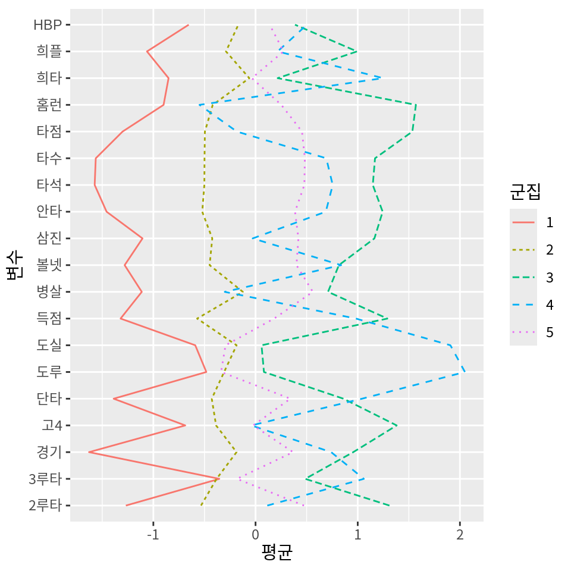
군집 평균을 이용하여 군집에 대한 다음과 같은 해석을 할 수 있다.
- 군집 3은 모든 부분에서 리그의 평균을 상회하는 것으로 보아 팀의 핵심 선수라는 것을 알 수 있다. 특히 홈런, 타점, 고의4구는 평균에 비해 매우 높으며, 도루와 도루실패는 평균 수준인 것으로 보아 중장거리 안타를 생산해 낼 수 있는 팀의 중심 타선을 이루는 선수들로 예상된다.
- 군집 5는 도루, 도루실패, 3루타는 리그의 평균을 크게 상회하고 홈런을 리그 평균을 하회하는 것으로 보아 발이빠른 타자들로 주로 테이블 세터로서의 역할을 하는 선수들로 에상된다.
- 군집 4는 리그 평균에 가까우나 많은 지표에서 평균을 약간 상회하는 것으로 보아 팀의 주전급 선수 중에서 공격이 중요한 포지션의 선수들로 예상된다.
- 군집 1은 리그 평균에 가까우나 많은 지표에서 평균을 하회하고 있어 주전과 비주전의 경계에 있는 선수나 수비가 중요한 포지션의 선수로 예상된다.
- 군집 2는 대부분의 지표에서 리그 평균을 하회하는 것으로 보아 팀의 비주전급 선수로 예상된다.
이러한 군집 해석이 맞는지 각 군집의 평균점에 어떠한 선수가 있는지 알아보자. 군집의 평균점과 각 사례의 거리를 계산하여 파악할 수도 있고, 14.2에서 소개한 주성분 분석을 사용하여 데이터를 산점도로 표현하고 산점도에 군집을 표현하여 군집의 중심에 어떠한 데이터가 있는지 살펴볼 수도 있다.
library(ggbiplot)
batters_pca <- prcomp(batters_scaled)
ggbiplot(batters_pca,
var.axes = F, # 변수 벡터 생략
labels=batters$선수명,
groups=paste("군집", result_best$cluster), # 군집 결과로 그룹화
ellipse=T, ellipse.alpha=0.1, ellipse.linewidth=0.5) +
theme_bw()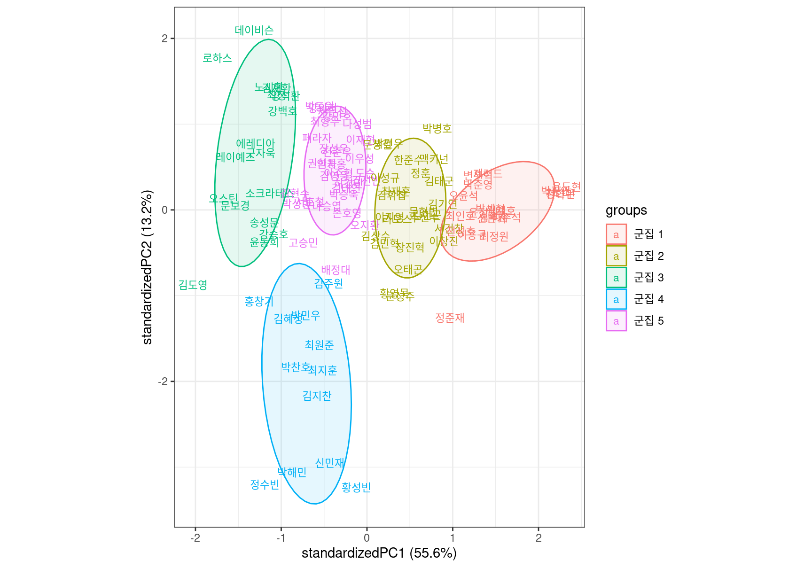
15.3 병합 군집화
이 절에서는 계층적 군집(hierachical clustering) 방법인 병합 군집화(agglomorative clustering) 기법에 대하여 살펴본다. 앞서 살펴본 k-평균 군집화 기법은 분할 군집(partitioning clustering) 방법으로 변수 공간을 이미 정해진 수로 분할한 후 분할 공간의 경계를 데이터 변동을 더 잘 설명하도록 반복적으로 조정해 나간다. 반면 계층적 군집화에서는 단계적으로 군집의 수를 늘려가거나 줄여 나간다. 계층적 군집화는 병합 방법과 분리 방법으로 나뉜다.
- 병합 방법은 데이터의 개별 사래 수만큼의 군집에서 시작하여 군집을 한 단계씩 병합하여 하나의 군집으로 병합될 때까지 군집화를 수행한다.
- 분리 방법은 데이터의 모든 사례를 하나의 군집으로 하여 한 단계씩 군집을 분리하여 개별 사례로 분리될 때까지 군집을 늘려 나간다.
계층적 군집화는 데이터의 개별 사례 수준까지 군집화가 수행되므로 데이터의 크기가 크지 않을 때 주로 사용된다.
15.3.1 병합 군집화 알고리즘
데이터의 사례를 개별 군집으로 시작하여 가장 유사한 두 군집을 하나의 군집으로 차례로 병합하여 모든 사례가 하나의 큰 군집이 될 때까지 군집한다. 따라서 k-평균 군집화처럼 이미 정해진 군집의 수는 없다. 모든 사례를 병합한 다음 어떤 단계의 군집 결과가 가장 적합한지를 사후 평가한다.
병합 군집화는 다음의 알고리즘으로 구현된다.
- 1단계: 데이터에 N 개의 사례가 있으면 군집의 수 \(k=N\)이 되며 개별 사례들이 독자적인 군집이 되어 알고리즘이 시작된다.
- 2단계: \(k\) 개의 군집 사이의 거리를 계산하여 거러 행렬(distance matrix) 또는 유사성 행렬(similarity matrix)을 생성한다.
- 맨 처음에는 개별 사례를 군집으로 시작하므로 거리 행렬은 모든 사례들 사이의 거리를 계산한 행렬이 된다.
- 사례들이 병합되어 군집을 이루면, 여러 사례로 구성된 군집 사이의 거리를 계산하는 방법이 정의되어야 한다.
- 3단계: 가장 가까운 거리의 두 군집을 병합하여 군집의 수를 \(k\)에서 \(k-1\)개로 만든다.
- 4단계: \(k > 1\)이면 2단계로 돌아가 하나의 군집으로 모두 병합될 때까지 반복한다.
각 반복 과정에서 병합된 군집의 순서와 거리를 기억하여 최종적으로 몇 개의 군집으로 나눌지를 결정한다. 그러므로 각 단계의 군집 결과를 평가하는 방법이 정의되어 있어야 한다.
다음과 같은 데이터를 사용하여 병합 군집화 알고리즘이 어떻게 작동하는지 확인해 보자.
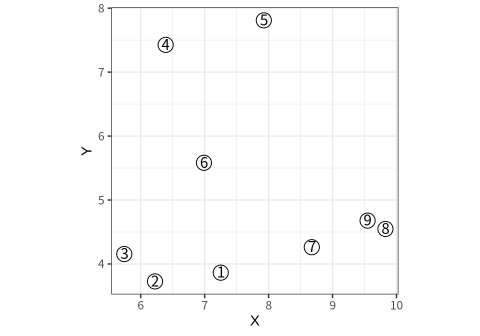
다음은 병합 군집화의 각 단계의 군집 결과를 보여준다.
- 가장 가까운 두 사례가 8, 9이므로 이 두 사례가 하나의 군집으로 병합된다.
- 다음으로 가장 가까운 두 사례가 2, 3이므로 이 두 사례가 하나의 군집으로 병합된다.
- 그 다음에는 첫 번째 군집과 7이 가장 가까우므로 7, 8, 9이 하나로 병합된다.
- 이러한 단계가 계속 반복되어 모든 데이터가 하나의 군집이 될 때까지 진행된다.
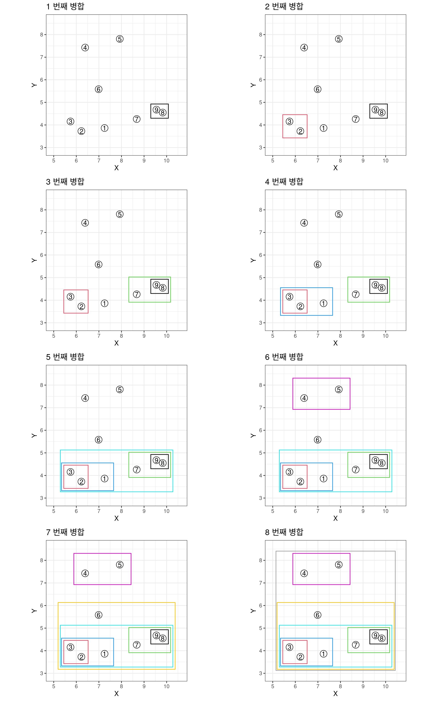
이렇게 단계적으로 수행한 군집화 결과는 다음과 같은 나무 구조의 계통도(덴드로그램: dendrogram)로 표현된다.
- 가로축은 데이터의 사례들이며 서로 가깝게 군집이 되는 사례들이 이웃하도록 배치된다.
- 세로축은 군집의 병합이 이루어졌을 때의 거리를 나타낸다.
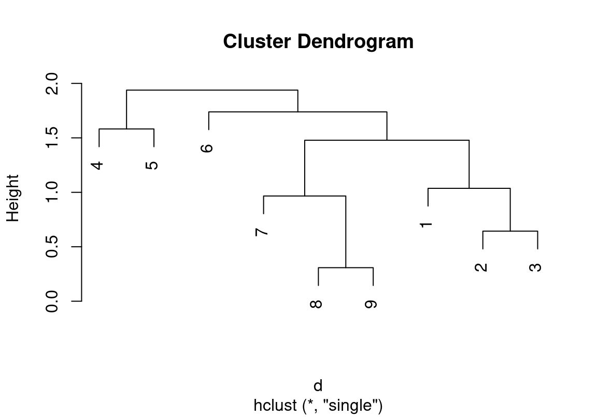
모든 사례들이 하나의 군집이 되도록 병합한 후에, 몇 개의 군집으로 데이터를 나눌지를 결정해야 한다. 다음은 3 개와 5 개의 군집으로 나누었을 때의 군집 결과를 보여준다.
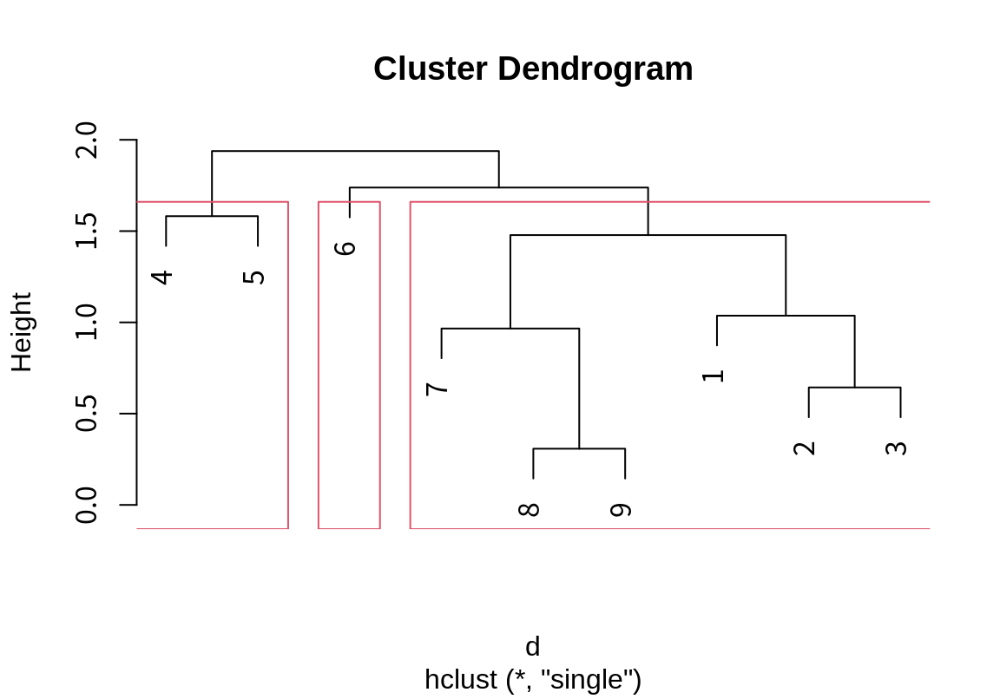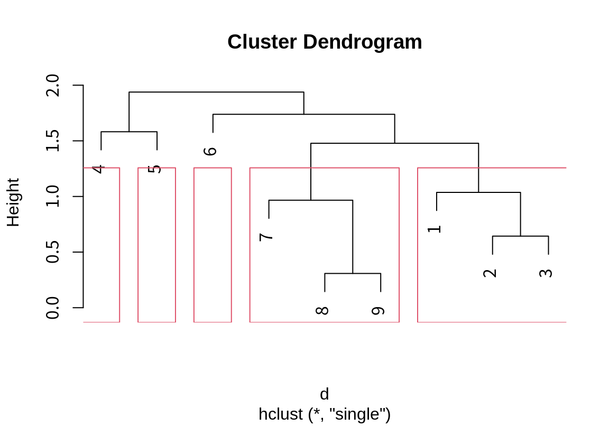
15.3.2 군집 사이의 거리 계산
앞의 병합 군집화의 예에서 4 단계로 다시 돌아가 보자. 다음 그래프에 표시된 두 군집 사이의 거리는 어떻게 계산할까?
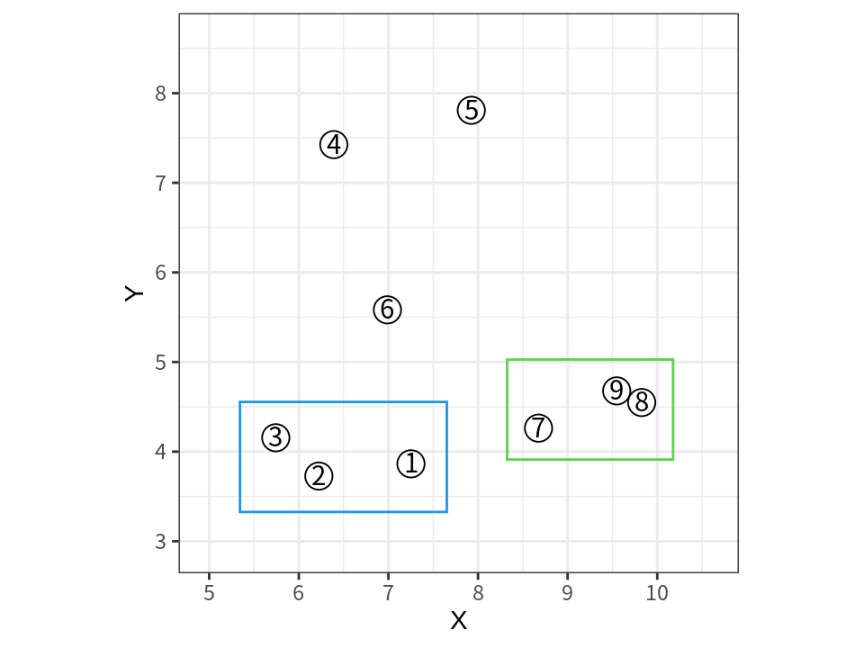
사례 사이의 거리는 앞서 설명한 유클리드나 맨해튼 거리 함수 등을 사용하여 계산할 수 있다. 그러나 병합 군집화가 진행되면 군집에는 점차 다수의 사례가 포함되므로 다수의 사례로 이루어진 군집 사이의 거리를 계산한는 방법이 정의되어야 한다.
또 다른 예를 살펴보자. 다음과 같은 나이를 가진 어린이들의 군집이 있다고 하자. 그러면 \(\{ 7 \}\)은 다음에 어느 군집과 병합되어야 할까?
\[ \{2, 3\}, \quad \{7\}, \quad \{9, 11, 13\} \]
- 7 살 어린이와 나이 차이가 가장 가까운 9 살 어린이가 있는 군집과 병합되어야 할까?
- 군집 내 어린이들의 나이 차이가 너무 커지는 것을 방지하기 위하여 병합된 후 군집 내의 거리가 가장 작은 군집과 병합되어야 할까? 그렇다면 \(\{2, 3, 7\}\)로 병합되면 최대 나이 차이가 5 살이고, \(\{7, 9, 11, 13\}\)으로 병합되면 최대 나이 차이가 6살이므로, 최대 나이 차이가 적은 2, 3 살 어린이의 군집과 병합되어야 할 것이다.
군집 사이의 거리를 계산하는 다양한 방식을 살펴보자.
단일 연결법 (Single Linkage Method)
단일 연결법은 최단(MIN) 연결법이라고도 한다.
군집 사이의 거리를 군집 사이에서 가장 가까운 구성원 쌍의 거리로 정의한다. 그러므로 최소한도의 단일 연결만 이루어지는 거리가 군집의 거리가 된다.
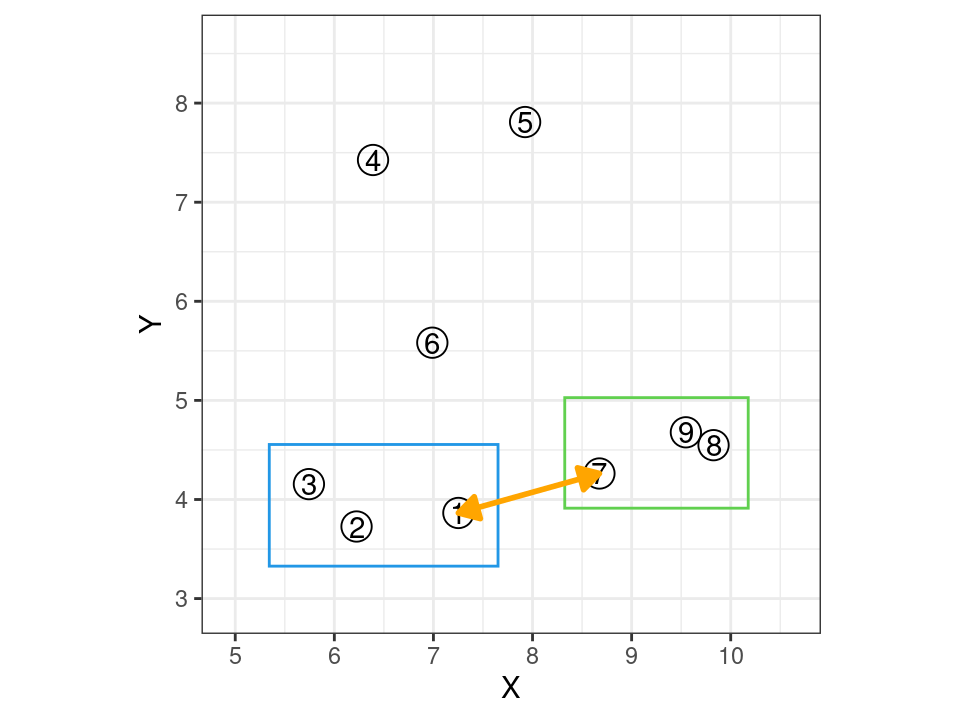
단일 연결법으로 하면 자신과 가까운 이웃이 동일 군집에 포함되게 된다.
이웃과 동떨어져 있는 고립되어 있는 데이터와 군집이 가장 마지막으로 병합되므로 특이치 검출에 유용하다.
앞의 나이가 다른 어린이의 군집에서 단일 연결법으로 거리를 계산하면 다음과 같다. 그러므로 거리가 더 가까운 9 살 어린이가 있는 군집과 병합된다.
\[\begin{align*} d(\{2, 3\}, \{ 7 \}) &= d(3, 7) = 4 \\ d(\{ 7 \}, \{9, 11, 13\}) &= d(7, 9) = 2. \end{align*}\]
- 이웃한 사례들을 계속 군집으로 병합하므로 한 군집에 있는 사례들 사이의 거리는 매우 커질 수 있다. 앞의 예는 단일 연결법으로 병합 군집화를 한 사례인데 아래 편에 위치한 사례들이 이웃한 사례들과 연결이 계속되면서 큰 군집으로 병합된 것을 볼 수 있다. 이 군집에서 3과 8 사이의 거리는 매우 크다. 그러므로 단일 연결법으로 군집화를 하면 군집의 응집력이 떨어질 수 있다.
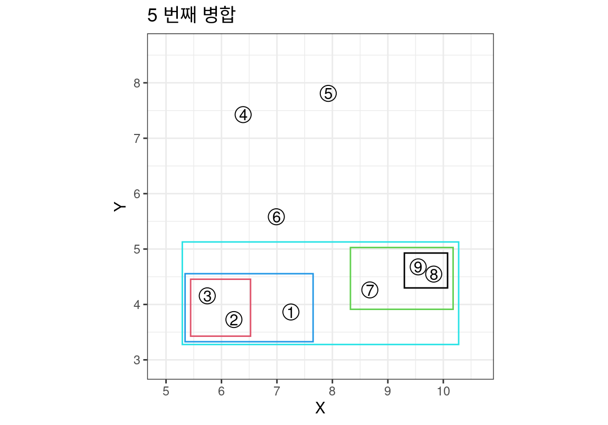
완전 연결법 (Single Linkage Method)
최장 연결법은 최장(MAX) 연결법이라고도 한다.
군집 사이의 거리를 군집 사이에서 가장 먼 구성원 쌍의 거리로 정의한다. 그러므로 이 최장 거리로 연결하면 모든 사례 쌍이 완전하게 연결 된다.
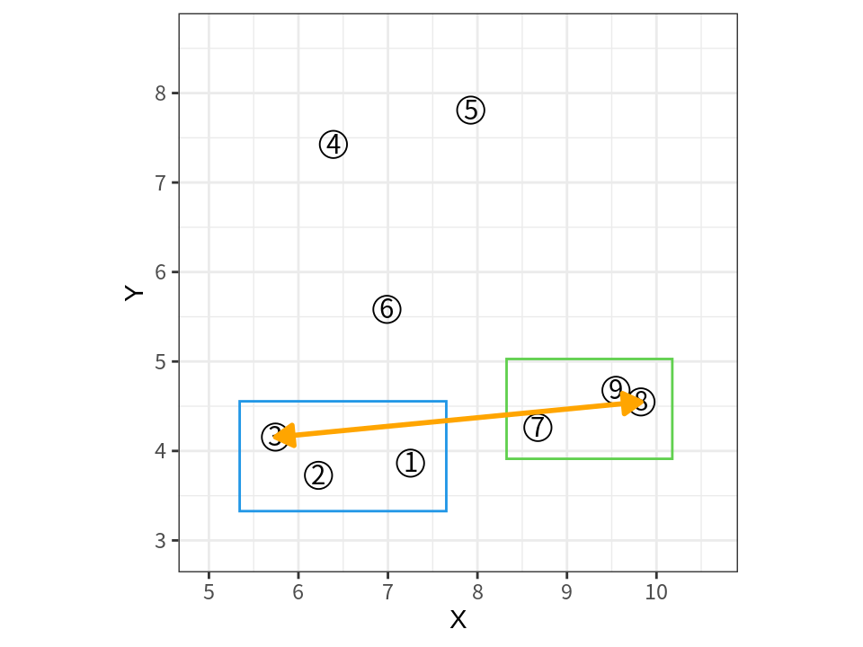
자신과 멀리 떨어져 있는 사례일수록 마지막으로 군집화 된다.
멀리 떨어져 있는 사례와 군집은 나중에 수행되므로 군집 내의 거리가 가까워지고 군집의 응집력이 강해진다.
앞의 나이가 다른 어린이의 군집에서 완전 연결법으로 거리를 계산하면 다음과 같다. 그러므로 7 살과 나이 차이가 큰 13 살이 있는 군집이 아니라 2 살 어린이가 있는 군집과 병합된다.
\[\begin{align*} d(\{2, 3\}, \{ 7 \}) &= d(2, 7) = 5 \\ d(\{ 7 \}, \{9, 11, 13\}) &= d(7, 13) = 6. \end{align*}\]
- 다음은 앞의 예제 데이터를 완전 연결법으로 거리를 계산하여 5 번째 단계까지 병합 군집한 결과를 보여준다. 군집들이 단일 연결법에 비해서 군집 내의 거리가 더 짧은 것을 볼 수 있다.
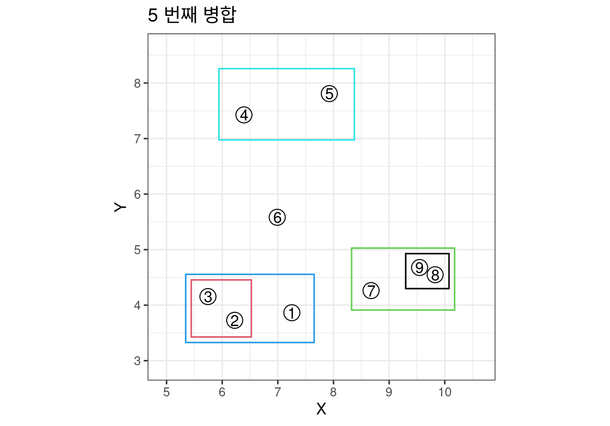
평균 연결법 (Average Linkage Method)
군집 사이의 거리를 군집 사이의 가능한 구성원 쌍의 거리의 평균으로 정의한다.
평균으로 군집 사이의 거리를 계산하므로 단일 연결법과 최장 연결법의 중간적 특성을 보인다.
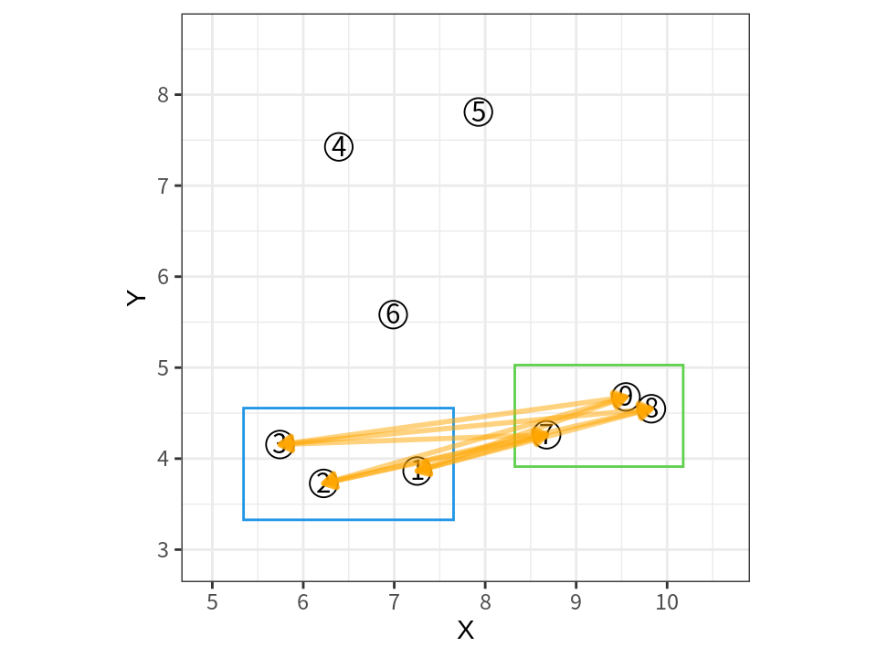
- 앞의 나이가 다른 어린이의 군집에서 완전 연결법으로 거리를 계산하면 다음과 같다. 그러므로 7 살은 자신과 나이 차이가 평균적으로 더 적은 9, 11, 13 살 어린이들과 병합된다.
\[\begin{align*} d(\{2, 3\}, \{ 7 \}) &= \frac{d(2, 7) + d(3,7)}{2} = 4.5 \\ d(\{ 7 \}, \{9, 11, 13\}) &= \frac{d(7,9) + d(7,11) + d(7,13)}{3} = 4. \end{align*}\]
중심점 연결법 (Centroid Linkage Method)
군집 사이의 거리를 군집의 중심점(평균) 사이의 거리로 정의한다.
두 군집의 경계가 붙어있어도 군집의 중심이 멀면 나중에 병합된다.
Ward 법 (Ward’s Method)
Ward 법은 지금까지의 군집 사이의 거리 계산 방법과는 다르다.
Ward 법은 데이터를 군집으로 병합할 때 발생하는 정보의 손실을 측정한다.
- 데이터이 사례가 모두 개별 군집으로 되어 있으면 사례의 측정값을 직접 이용할 수 있으므로 정보의 손실이 없다.
- 사례들이 군집으로 병합되어 있으면, 사례들을 군집의 평균으로 뭉뚱그려서 이해하므로, 사례의 정확한 측정값에 대한 정보는 손실된다.
- Ward 법에서는 군집화에 따른 정보의 손실은 오차제곱합(ESS)로 계산한다.
- ESS는 사례와 군집 평균의 차이의 제곱의 합이다. 그러므로 ESS는 군집 내 거리의 제곱 합(within_SS)이라 할 수 있다.
\(k\) 개의 군집이 있을 때 다음 번 병합할 군집의 선택은 두 군집이 병합되었을 때 정보의 손실 증가가 가장 작은 두 군집을 병합한다.
나이가 다른 어린이 군집의 병합 문제에서 세 군집의 ESS와 그 합은 다음과 같다. \[\begin{align*} ESS(\{2, 3\}) &= (2 - 2.5)^2 + (3 - 2.5)^2 = 0.5 \\ ESS(\{7\}) &= (7 - 7)^2 = 0 \\ ESS(\{9, 11, 13\}) &= (9 - 11)^2 + (11 - 11)^2 + (13 - 11)^2 = 8 \\ ESS(\{2, 3\}, \{7\}, \{9, 11, 13\}) &= 8.5 \end{align*}\] 만약 7 살 어린이가 2, 3 살 어린이들과 병합될 때의 정보 손실은 다음과 같다. \[\begin{align*} ESS(\{2, 3, 7\}) &= (2 - 4)^2 + (3 - 4)^2 + (7 - 4)^2 = 14 \\ ESS(\{2, 3, 7\}, \{9, 11, 13\}) &= 22 \end{align*}\] 마찬가지로 7 살 어린이가 9, 11, 13 살 어린이들과 병합될 때의 정보 손실은 다음과 같다. \[\begin{align*} ESS(\{7, 9, 11, 13\}) &= (7 - 10)^2 + (9 - 10)^2 + (11 - 10)^2 + (13 - 10)^2 = 20 \\ ESS(\{2, 3\}, \{7, 9, 11, 13\}) &= 20.5 \end{align*}\] 위의 결과에서 Ward 법을 사용하면 정보 손실이 더 적어지도록 7 살 어린이가 9, 11, 13 살 군집과 병합된다.
Ward 법을 사용하면 정보의 손실을 줄이기 위하여 군집들의 크기 차이가 크지 않다.
15.3.3 hclust() 함수를 이용한 병합 군집화
R의 기본 stats 패키지는 병합 군집화를 위한 hclust() 함수를 제공한다.
- 첫 번째 인수는 사례 사이의 거리 행렬로
dist()함수를 이용하여 계산한다. method인수는 군집 사이의 거리 계산법을 지정한다. (dist()함수의method와 혼동하지 않길 바란다.dist()함수의method는 유클리드, 맨해튼 등의 사례 사이의 거리 계산 방법을 지정하고,hclust()의method는 군집 사이의 거리 계산 방법을 지정한다.)"single": 단일 연결법"complete": 완전 연결법"average": 평균 연결법"centroid": 중심점 연결법"ward.D","ward.D2": Ward 법의 두 가지 다른 알고리즘을 지정할 수 있다.
다음은 정규화된 KBO 타자들의 기본통계 데이터에 대한 유클리드 거리를 계산한 후, 단일 연결법으로 병합 군집화를 수행한는 예이다.
Call:
hclust(d = d, method = "single")
Cluster method : single
Distance : euclidean
Number of objects: 100 병합 군집화 결과를 출력하면 군집 거리 계산법(Cluster method), 사례 사이의 거리 계산법(Distance), 사례의 수(Number of objects)를 출력한다.
병합 군집화 결과는 리스트 형식으로 상세 정보를 보유하고 있다.
$merge: 사례 수가 \(n\)이면 \((n-1) \times 2\)의 행렬로, 군집화의 각 단계별로 어떤 군집들이 병합되었는지에 대한 정보이다. 음수이면 병합된 사례를 의미하고, 양수이면 이전 단계에서 병합된 군집을 의미한다.$height: 각 단계에서 병합된 군집 사이의 거리를 의미한다.$order: 시각화에 적합하도록 사례의 순서를 정렬한 벡터이다. 이 순서로$merge의 정보를 시각화하면 계통도에서 선의 교차가 발생하지 않는다.$labels: 사례의 레이블$call:hclust()호출 저보$method: 군집 사이의 거리 계산법$dist.method: 사례 사이의 거리 계산법
데이터 분석 초보자가 이 데이터를 직접 사용하는 경우는 많지 않으므로 이에 대한 상세한 설명은 생략한다.
15.3.4 병합 군집화에 대한 계통도 그리기
병합 군집화의 결과를 plot() 함수에 전달하면 계통도를 시각화한다.

계통도에서 사례들이 행 번호로 표현되었다.
선수의 이름이 나타나도록 label 인수를 지정해 보자.

2024 시즌에 가장 특이했던 타자는 ’김도엉’이었음을 볼 수 있다. 나머지 군집들과 가장 마지막에 병합되었다. ’김도영’은 2024 시즌에서 홈런을 잘치는 거포형 타자이면서 도루를 잘 하는 발 빠른 타자였다. 이러한 타자는 KBO에 흔하지 않다.
타자들이 병합될 때의 군집 거리로 세로축의 위치가 결정되어 있다.
만약 모든 사례들은 아래쪽에 나타내려면 hang=-1으로 설정한다.
hang은 두 군집이 병합된 거리에서 어느 정도 떨어뜨려 사례를 표시할지를 지정하는 인수이다.
hang=0.1이 기본값이고 그래프의 세로축의 길이의 10% 정도 떨어뜨려 사례를 표시한다.
hang=-1이면 세로축의 0 밑에 사례들을 표시한다.
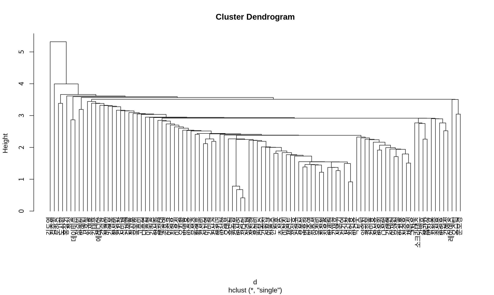
15.3.5 군집 나누기
병합 군집이 완료되면 적절한 군집의 수로 데이터를 군집화해야 한다.
cutree() 함수는 병합 군집 결과에서 사례를 원하는 수만큼의 군집으로 분할한다.
- 첫 번째 인수로 병합 군집 결과를 지정한다.
k인수로 분할하고자 하는 군집의 수를 지정한다.h인수로 군집을 어느 거리를 기준으로 분할할지를 지정한다.k와h는 둘 중에 하나만 지정되어야 한다. 둘 다 지정되면k가 우선적으로 적용된다.
다음은 \(k=3\)일 때의 사례들의 군집화 결과이다.
[1] 1 2 2 2 2 2 2 2 2 2 2 2 2 2 2 2 2 2 2 2 2 2 2 2 2 2 2 2 2 2 2 3 2 2 2 2 2
[38] 2 2 2 2 2 2 2 2 2 2 2 2 2 2 2 2 2 2 2 2 2 2 2 2 2 2 2 2 2 2 2 2 2 2 2 2 2
[75] 2 2 2 2 2 2 2 2 2 2 2 2 2 2 2 2 2 2 2 2 2 2 2 2 2 2군집에 포함된 사례 수를 확인해 보자.
cls
1 2 3
1 98 1 단열 연결법의 특징때문에 98 명의 타자가 한 군집에 몰려 있고, 두 명의 예외적인 타자가 각기 하나의 군집을 이루고 있다.
데이터에서 예외적인 군집에 속하는 타자가 누구였는지 확인해 보자.
# A tibble: 1 × 38
선수명 팀명 포지션 경기 타석 타수 안타 단타 `2루타` `3루타` 홈런 득점
<chr> <chr> <chr> <dbl> <dbl> <dbl> <dbl> <dbl> <dbl> <dbl> <dbl> <dbl>
1 김도영 KIA 내야수 141 625 544 189 112 29 10 38 143
# ℹ 26 more variables: 타점 <dbl>, 볼넷 <dbl>, 고4 <dbl>, HBP <dbl>,
# 삼진 <dbl>, 희플 <dbl>, 희타 <dbl>, 병살 <dbl>, 도루 <dbl>, 도실 <dbl>,
# 타율 <dbl>, BABIP <dbl>, `볼넷%` <dbl>, `삼진%` <dbl>, `볼/삼` <dbl>,
# ISO <dbl>, `타수/홈런` <dbl>, OPS <dbl>, RC <dbl>, `RC/27` <dbl>,
# wRC <dbl>, SPD <dbl>, wSB <dbl>, wOBA <dbl>, wRAA <dbl>, WAR <dbl># A tibble: 1 × 38
선수명 팀명 포지션 경기 타석 타수 안타 단타 `2루타` `3루타` 홈런 득점
<chr> <chr> <chr> <dbl> <dbl> <dbl> <dbl> <dbl> <dbl> <dbl> <dbl> <dbl>
1 김주원 NC 내야수 134 475 385 97 68 18 2 9 61
# ℹ 26 more variables: 타점 <dbl>, 볼넷 <dbl>, 고4 <dbl>, HBP <dbl>,
# 삼진 <dbl>, 희플 <dbl>, 희타 <dbl>, 병살 <dbl>, 도루 <dbl>, 도실 <dbl>,
# 타율 <dbl>, BABIP <dbl>, `볼넷%` <dbl>, `삼진%` <dbl>, `볼/삼` <dbl>,
# ISO <dbl>, `타수/홈런` <dbl>, OPS <dbl>, RC <dbl>, `RC/27` <dbl>,
# wRC <dbl>, SPD <dbl>, wSB <dbl>, wOBA <dbl>, wRAA <dbl>, WAR <dbl>15.3.6 최적 군집 수의 결정
계통도를 이용한 최적 군집 수 결정
병합 군집이 완료된 후 최적 군집의 수를 어떻게 결정해야 할까?
사례의 수가 많지 않은 경우에는 계통도 상에서 여러 개의 군집 수로 분할해 보아서 군집이 잘 분리되고 설명이 용이한 군집의 수를 선택하기도 한다.
다음과 같은 어떤 가족 모임의 참석자의 나이에 대한 정보가 있다고 하자.
[1] 1 3 5 7 9 11 13 28 31 34 35 39 43 45 70 72 75이 가족 모임을 단일 연결법으로 군집화하면 다음과 같이 군집화 된다.
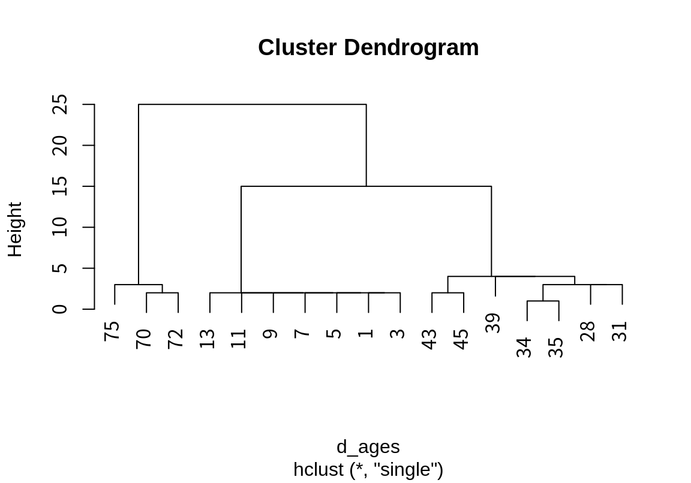
이 데이터는 거리가 5 이상인 곳에서 자연스럽게 데이터가 분리되는 것을 확인할 수 있다.
rect.hclust() 함수는 plot() 함수로 그려진 계통도 위해 군집 결과를 사각형으로 표시해 준다.
- 첫 번째 인수로 병합 군집 결과를 지정
k또는h인수로 분할할 군집의 수나 군집의 거리를 지정한다.which인수는 사각형으로 표시할 군집의 범위를 지정한다. 기본값은1:k로 분할돈 군집을 모두 사각형으로 표시한다.border는 사각형의 경계 색상을 지정한다.
rect.hclust() 함수를 사용하면 계통도 상에서 군집의 분할 결과를 시각적으로 탐색할 수 있다.
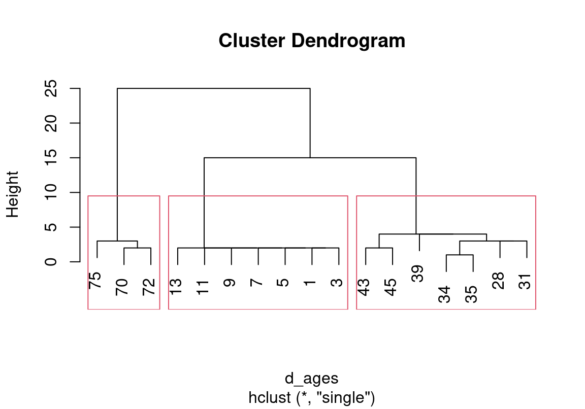
5 살 거리로 분할하면 자연스럽게 조부모 세대, 부모 세대, 자식 세대로 분할되었다는 것을 확인할 수 있다.
다음처럼 군집의 수로도 분할을 탐개할 수 있다. 6 개로 군집을 하면 어떻게 분할되는지 살펴보자.
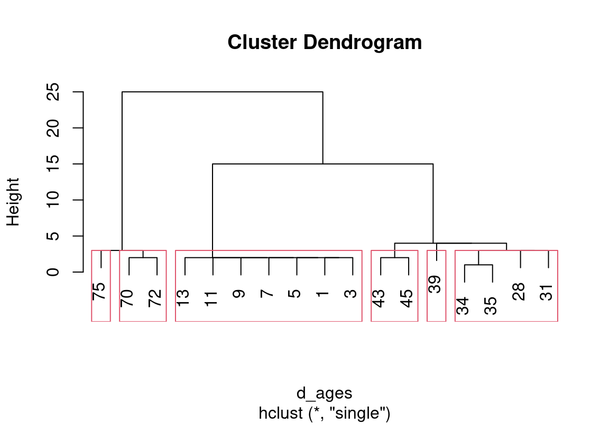
3 살 이상 차이가 나는 그룹으로 나누어져 부모 세대는 30대 초반, 30대 후반, 40대 초반으로 분할되고 조부모 세대는 70 대 초반과 후반으로 분할되었다. 이렇듯 군집의 수나 군집을 분리하는 거리를 기준으로 군집을 분할하여 계통도에 시각화하여 가장 직관적으로 적절하다고 판단되는 군집 결과를 선택한다.
그러나 데이터의 사례 수가 많아지면 계통도에 시각화하는 것만으로 군집화를 하기 어렵다. 다음은 KBO 타자의 병합 군집 결과를 5 개의 군집으로 분할한 것을 계통도에 시각화한 것이다. 사례 수가 너무 많으면 군집 결과를 파악하기가 쉽지 않다.
plot(batters_hcls, labels=batters$선수명, hang=-1) # 계통도 시각화
rect.hclust(batters_hcls, k=5) # 군집 분할 시각화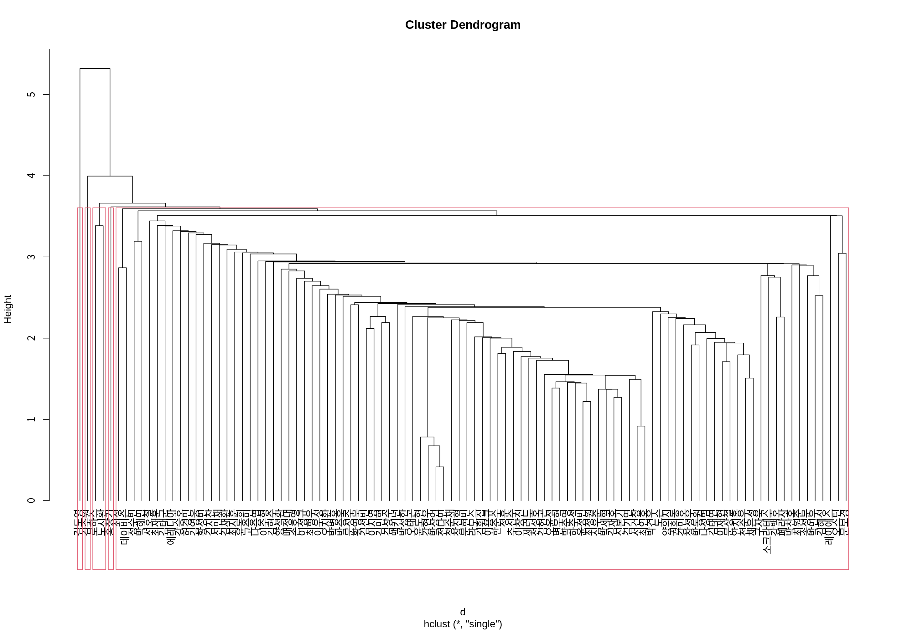
평가 지표를 이용한 최적 군집 수 결정
최적 군집의 수를 결정하는 또 다른 방법은 군집화가 얼마나 잘 되었는지를 평가하는 지표를 사용하여 것이다. 좋은 군집화란 군집 내의 구성원 사이에는 동질성이 크고 다른 군집과는 이질적이어야 한다. 즉, 군집 내 구성원 사이의 거리는 가깝고, 군집들 사이의 거리는 먼 경우이다. 그러므로 대부분의 군집화를 평가하느 지표는 응집도와 분리도를 측정하여 이를 종합하는 방법을 사용한다.
- 응집도: 군집 내 데이터의 유사도
- 분리도: 군집 사이의 데이터의 비유사도
응집도와 분리도를 측정하는 방식은 다양하다. 대표적인 군집화 평가 척도를 살펴보자.
- 범용 척도는
(군집 내 평균 거리)/(군집 중심 사이의 평균 거리)로 측정되며 값이 작을수록 잘 된 군집을 의미한다. - \(R^2\)는
(1 - within_SS)/total_SS로 정의된다.within_SS는 사례와 군집 평균 사이의 거리의 제곱의 합을,total_SS는 사례와 전체 평균 사이의 거리 제곱의 합을 의미한다. 클수록 잘 된 군집을 의미한다. - Dunn Index는
(군집 사이 최소 거리)/(군집 내 최대 거리)로 측정된다. 분리도가 높아지면 분자가 커지고 응집도가 높으면 분모가 작아지므로 Dunn Index는 증가한다. - Silhouette은 \(s(i) = (b(i) – a(i)) / \max\{a(i), b(i)\}\)로 측정된다. \(a(i)\) 사례 \(i\)의 군집 내 구성원과의 평균 거리이고, \(b(i)\)는 사례 \(i\)와 가장 가까운 이웃 군집의 구성원과의 평균 거리이다. 분리도 높으면 \(b(i)\)가 증가하고 응집도가 높으면 \(a(i)\)가 감소하여 \(s(i)\)가 1에 근접한다.
이 외에도 많은 연구자들이 군집 평가 척도를 제안하였다. 그런데 군집을 평가하는 척도는 매우 많으며, 평가 척도 별로 엇갈린 결과를 줄 때가 많다.
NbClust 패키지는 다양한 평가 척도로 군집화 결과를 평가한 후, 가장 많은 척도에서 최적이라고 한 군집의 수를 선택해 준다.
NbClust를 설치되어 있지 않다면 설치를 한다.
NbClust 패키지의 NbClust() 함수는 20 여개의 평가 척도로 군집의 수에 따라 군집화를 평가해 준다.
data인수: 첫번째 인수로 군집화를 수행할 데이터가 기술된다.distance인수: 데이터 관측치 간의 거리 계산을 위해 사용할 방법이 정의된다. dist() 함수에서 사용하는 방법 중 하나를 기술한다.min.nc인수: 평가를 할 최소 군집의 수. 디폴트 값은 2.max.nc인수: 평가를 할 최대 군집의 수. 디폴트 값은 15.method인수: 군집 분석에 사용할 방법을 기술한다. “ward.D”, “ward.D2”, “single”, “complete”, “average”, “mcquitty”, “median”, “centroid”, “kmeans” 등이 지정될 수 있다.index인수: 평가에 사용할 평가 지표를 설정한다. 기본값은 “all”로 모든 지표를 계산한다. 그런데 “all”로 설정하면 데이터에 따라서는 일부 지표에서 계산 문제가 발생할 수 있다. 이 경우에는 각각의 지표를 설정하여 평가 결과를 확인해 본다.
batters_scaled 데이터에서 안타=단타+2루타+3루타+홈런의 선형 종속성이 발생한다.
데이터에서 이러한 선형 종속성이 있으면 NbClust() 함수의 지표 계산 중에 역행렬을 구하는 부분이 있어서 오류가 발생한다.
이를 방지하기 위하여 안타 열을 제외하고 최적의 군집 수를 평가해 보자.
그리고 단일 연결법은 주류의 선수에서 벗어난 특이한 선수를 찾는데 주로 사용되므로, 평균 연결법을 사용하여 최적 군집 수를 찾아보자.
library(NbClust)
nc_all <- NbClust(data=batters_scaled[, -4],
distance="euclidean",
min.nc=2, max.nc=15,
method="average")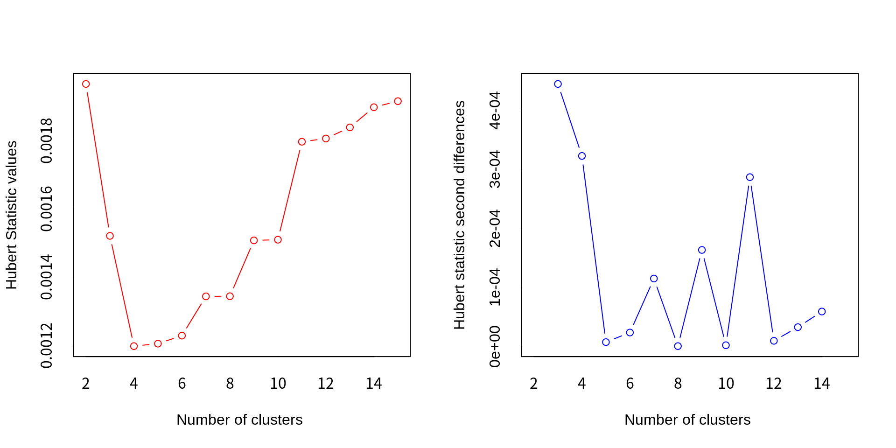
*** : The Hubert index is a graphical method of determining the number of clusters.
In the plot of Hubert index, we seek a significant knee that corresponds to a
significant increase of the value of the measure i.e the significant peak in Hubert
index second differences plot.
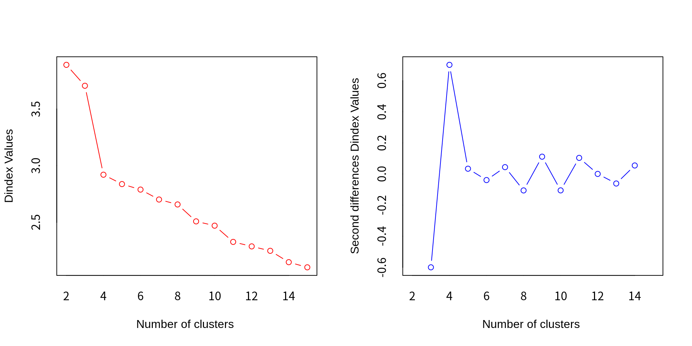
*** : The D index is a graphical method of determining the number of clusters.
In the plot of D index, we seek a significant knee (the significant peak in Dindex
second differences plot) that corresponds to a significant increase of the value of
the measure.
*******************************************************************
* Among all indices:
* 9 proposed 2 as the best number of clusters
* 2 proposed 3 as the best number of clusters
* 10 proposed 4 as the best number of clusters
* 1 proposed 7 as the best number of clusters
* 1 proposed 9 as the best number of clusters
* 1 proposed 13 as the best number of clusters
***** Conclusion *****
* According to the majority rule, the best number of clusters is 4
******************************************************************* NbClust()는 20여 개의 평가지표에서 최적으로 선택된 횟수를 알려주고, 가장 많이 최적으로 선택된 군집의 수를 최적 군집 수로 선택한다.
이 예에서는 2 개의 군집과 4 개의 군집이 근소한 결과를 보였는데, 4 개의 군집이 더 많은 선택을 받아서 4 개의 군집이 최적 군집으로 선택되었다.
아울러 지표의 값보다는 그래프를 이용하여 팔꿈치 부분에서 최적 군집 수를 결정하는 D-index와 Hubert index의 경우에는, 왼편에는 군집 수에 따른 지표 값을, 오른편에는 군집 수에 따른 지표 값의 변화량을 보여준다. 오른편 그래프에서 가장 큰 피크를 이루는 곳이 최적 군집 수라 할 수 있다.
NbClust()의 결과에는 다음 4 가지 상세 정보가 포함되어 있다.
$All.index: 군집 수에 따른 모든 지표의 값$All.CriticalValues: 지표 중에는 지표 값이 특정한 문턱 값을 넘어서는 것을 기준으로 최적 군집 수를 결정한다. 이러한 지표에 대하여 군집 수에 문턱 값을 제공한다.
$Best.nc: 각 지표가 선택한 최적 군집 수$Best.partition: 다수결에 의해 최종적으로 최적으로 선택된 군집 수로 군집을 분할한 결과
각 지표가 선택한 최적 군집 수의 빈도를 시각화해 보자.
t(nc_all$Best.nc) %>% # 행렬 전치
as_tibble() %>% # 데이터프레임으로 변환
rownames_to_column(var="index") %>% # 행이름 열로 변환
ggplot() +
geom_bar(aes(Number_clusters)) +
scale_x_continuous(breaks=0:15)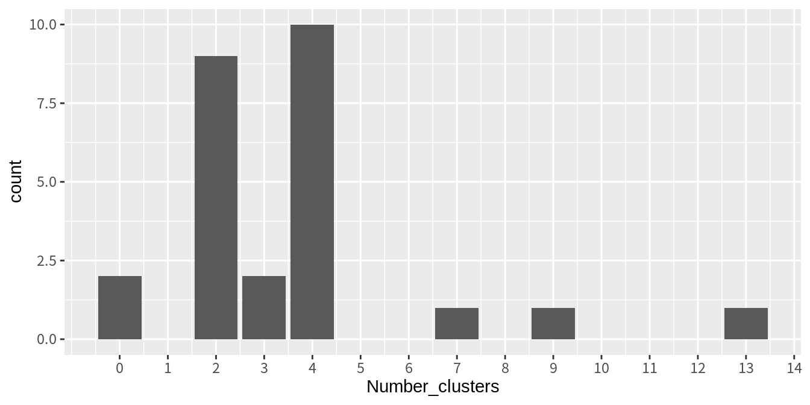
군집 결과의 해석
최적 군집 결과를 프로파일링 해 보자. 각 사례의 군집 배정 결과는 다음과 같다.
[1] 1 2 2 2 2 2 2 2 2 2 2 2 2 2 2 3 2 2 2 2 2 2 2 2 2 2 2 2 2 2 2 4 2 3 2 3 4
[38] 3 2 2 2 2 3 2 2 2 2 2 4 4 2 4 2 4 4 2 4 2 4 2 4 2 2 2 2 2 2 4 4 4 4 4 4 4
[75] 2 2 4 4 4 4 2 4 4 4 2 4 3 4 4 4 4 4 4 4 4 4 4 4 4 4이 정보를 정규화된 데이터와 결합하여 군집의 평균을 비교해 보자.
kmeans()는 군집의 평균점을 알고리즘 상에서 계산하므로 이 정보를 제공하지만, 다른 알고리즘의 경우에는 군집화가 수행된 후에 군집 평균을 직접 계산하여야 한다.
cluster_means <- as_tibble(batters_scaled) %>% # 데이터프레임으로 변환
mutate(군집=factor(nc_all$Best.partition)) %>% # 군집 결과를 열로 추가
group_by(군집) %>% # 군집으로 그룹화
summarise(across(everything(), mean)) # 군집 별 평균 구하기
cluster_means# A tibble: 4 × 20
군집 경기 타석 타수 안타 단타 `2루타` `3루타` 홈런 득점 타점
<fct> <dbl> <dbl> <dbl> <dbl> <dbl> <dbl> <dbl> <dbl> <dbl> <dbl>
1 1 1.03 1.32 1.29 1.81 1.16 1.11 4.20 2.63 3.17 1.68
2 2 0.549 0.646 0.656 0.634 0.554 0.625 0.0162 0.513 0.501 0.665
3 3 0.745 0.665 0.606 0.514 0.892 -0.187 1.74 -0.707 1.13 -0.481
4 4 -0.940 -1.07 -1.08 -1.05 -0.973 -0.904 -0.408 -0.700 -0.986 -0.931
# ℹ 9 more variables: 볼넷 <dbl>, 고4 <dbl>, HBP <dbl>, 삼진 <dbl>, 희플 <dbl>,
# 희타 <dbl>, 병살 <dbl>, 도루 <dbl>, 도실 <dbl>군집의 평균을 평행좌표계로 시각화해 보자.
pivot_longer(cluster_means, -군집, names_to="변수", values_to="평균") %>%
ggplot() +
geom_line(aes(변수, 평균, group=군집, color=군집, linetype=군집)) +
coord_flip()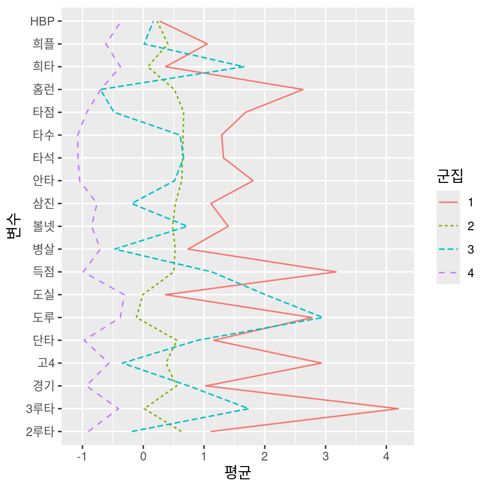
마지막으로 k-평균 군집화 때와 마찬가지로 군집의 사례를 파악할 수 있도록 14.2에서 소개한 주성분 분석을 사용하여 사례를 산점도로 표현하고 산점도에 군집을 표현해 보자. 한 명으로 이루어진 군집이 있어서 타원 추정이 어렵다는 정보가 출력될 것이다.
batters_pca <- prcomp(batters_scaled)
ggbiplot(batters_pca,
var.axes = F, # 변수 벡터 생략
labels=batters$선수명,
groups=paste("군집", nc_all$Best.partition), # 군집 결과로 그룹화
ellipse=T, ellipse.alpha=0.1, ellipse.linewidth=0.5) +
theme_bw()Too few points to calculate an ellipse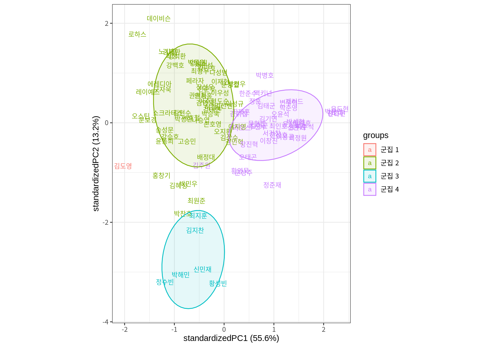
k-평균 군집화와 크게 다른 점은 두 가지이다.
- “김도영” 선수가 홀로 군집을 이루고 있다.
- 최적 군집 수가 5 개가 아니라 4 개가 되었다.
k-평균 군집 결과와 유사하게 군집 2는 중장거리 타자들의 그룹이고, 군집 3은 발빠른 타자들의 그룹, 군집 4는 출전 경기가 크지 않은 타자들의 그룹이다. 군집 1은 김도영 선수의 군집으로 발도 빠르고 중장거리포를 갖춘 드문 선수였음을 보여준다.